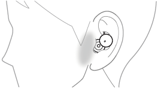
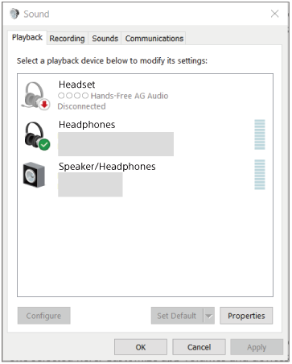
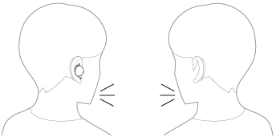
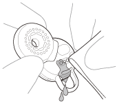
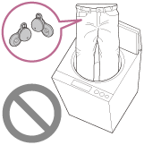

[1] Getting startedWhat you can do with the BLUETOOTH® function
The headset uses Bluetooth wireless technology, allowing you to do the following.
Listening to music
You can receive audio signals from a smartphone or music player to enjoy music wirelessly.
Making phone calls
You can make and receive calls hands-free, while leaving your smartphone or mobile phone in your bag or pocket.
[2] Getting startedAbout the voice guidance
In the factory settings, when the headset is worn on your ears, you will hear the English voice guidance via the headset.
You can change the language of the voice guidance and turn on/off the voice guidance using “Sony | Headphones Connect” app. For more details, refer to the “Sony | Headphones Connect” app help guide.
https://rd1.sony.net/help/mdr/hpc/h_zz/
- When powering off with the “Sony | Headphones Connect” app/When the headset is restarted due to initialization or setting change by the “Sony | Headphones Connect” app: “Power off”
- When the headset is removed from the charging case during pairing mode: “Bluetooth pairing”
- When establishing a Bluetooth connection: “Bluetooth connected”
- When disconnecting a Bluetooth connection: “Bluetooth disconnected”
- When the Google™ Assistant is not available during software update: “The Google assistant is not available during update. Please wait a moment until the update completes.”
- When the Google Assistant is not available on the smartphone connected to the headset even if you operate the headset unit to which the Google Assistant feature is assigned: “The Google Assistant is not connected”
- When Amazon Alexa is not available on the smartphone connected to the headset even if you operate the headset unit to which the Amazon Alexa feature is assigned: “Either your mobile device isn’t connected; or you need to open the Alexa App and try again”
- When the headset is restarted due to initialization or setting change by the “Sony | Headphones Connect” app and turned on: “Power on”
- When informing the remaining battery charge of the headset: “Battery about XX %” (The “XX” value indicates the approximate remaining charge. Use it as a rough estimate.) / “Battery fully charged”
- When the remaining battery charge of the headset is low: “Low battery, please recharge headset”
- When automatically turning off due to low battery of the headset: “Please recharge headset. Power off”
Note
- It takes about 20 minutes when you change the language of the voice guidance.
- When you initialize the headset to restore to the factory settings after you change the language of the voice guidance, the language will also return to the factory setting.
- If the voice guidance is not heard after changing the voice guidance language or updating the software of the headset, set the headset into the charging case to turn it off, then remove the headset from the charging case to turn it on again.
[3] Getting startedSupplied accessoriesChecking the package contents
After opening the package, check that all of the items in the list are included. If any items are missing, contact your dealer.
Numbers in ( ) indicate the item amount.
Wireless Stereo Headset
USB Type-C® cable (USB-A to USB-C®) (approx. 20 cm (7.88 in.)) (1)
Fitting supporters (S/M/L 2 each)
- M-sized fitting supporters come attached to the left and right units of the headset at the time of purchase.
Charging case (1)
[4] Getting startedSupplied accessoriesReplacing the fitting supporters
M-sized fitting supporters come attached to the left and right units of the headset at the time of purchase.
If you feel the size of the fitting supporters does not fit your ears, change the fitting supporters to another size that fits your ears better. The size of the left and right fitting supporters may be different.
The fitting supporters are common for both left and right sides.
- Remove the fitting supporter.

- Attach the fitting supporter.
A: Align
Align the protruding part of the headset with the hole part of the fitting supporter and firmly insert the fitting supporter all the way. Do not attach the fitting supporter in a loose or skewed manner.
After attaching the fitting supporter, check that there is no floating between the fitting supporter and the headset.
[5] Getting startedSupplied accessoriesWhen you have finished using the headset
When you have finished using the headset, be sure to set the headset in the charging case.
Put the left unit of the headset (the unit with the tactile dot) back into the left hole of the charging case, put the right unit of the headset back into the right hole of the charging case, insert the units until they click, and then make sure that the units are locked in the charging case.
Close the lid of the charging case.
Note
- If perspiration or water is left on the charging port, it may impair the ability to charge the headset. Immediately wipe off any perspiration or water on the charging port after use. When the charging ports of the headset or charging case get dirty, wipe them clean with a soft dry cloth.
When the headset gets wet
- Use a soft dry cloth to wipe off any water that gets on the headset.
- Turn the sound output part downward and gently tap it about 10 times on a dry cloth, etc. to remove any water collected inside.
- Turn the microphone hole downward and gently tap it about 10 times on a dry cloth, etc. to remove any water collected inside.
- After completing these steps, leave the headset to dry in room temperature.
[6] Getting startedParts and controlsLocation and function of parts
Headset
- Fitting supporters (left, right)
- Tactile dot
There is a tactile dot on the left unit of the headset. - Driver unit parts (left, right)
- Microphones (left, right)
- Housing parts (left, right)
- Charging ports (left, right)
- (left) mark
- (right) mark
- Built-in antennas (left, right)
Charging case
- Lid
- Indicator (green/orange/blue)
Indicates the power, communication or charging status of the headset. - Lid open button
- Pairing/reset/initialize button
Used when entering pairing mode, resetting or initializing the headset. - USB Type-C port
Using the supplied USB Type-C cable, connect the charging case to a computer or to an AC outlet via a commercially available USB AC adaptor to simultaneously charge both the headset and the charging case.
[7] Getting startedParts and controlsAbout the indicator
You can check various statuses of the headset/charging case by the indicator on the charging case.
: Turns on in green / : Turns on in orange / : Turns on in blue / -: Turns off
Indication of the remaining battery charge
When both the left and right units of the headset are stored in the charging case: Displays the remaining battery charge of the headset unit with less remaining battery charge between the left and right units of the headset.
When either the left or right unit of the headset is stored in the charging case: Displays the remaining battery charge of the headset stored in the charging case.
When both headset units are removed from the charging case: Displays the remaining battery charge of the charging case.
When the lid of the charging case is opened or closed, or when the USB Type-C cable is removed after charging is complete, the indicator lights up as follows depending on the remaining battery charge.
- When the headset is stored in the charging case and the battery of the headset is fully charged / When the headset is not stored in the charging case and the battery of the charging case is fully charged
(lights up in green for about 6 seconds) - When the headset is stored in the charging case and the remaining battery charge of the headset is 94% or less / When the headset is not stored in the charging case and the remaining battery charge of the charging case is 30% or less
(lights up in orange for about 6 seconds)
When the headset is removed from the charging case, or when the headset is stored in the charging case, the indicator lights up as follows depending on the remaining battery charge.
- When the headset is stored in the charging case and the battery of the headset is fully charged / When the headset is not stored in the charging case and the battery of the charging case is fully charged
(lights up in green for about 3 seconds) - When the headset is stored in the charging case and the remaining battery charge of the headset is 94% or less / When the headset is not stored in the charging case and the remaining battery charge of the charging case is 30% or less
(lights up in orange for about 3 seconds)
Charging status
- While charging the headset / While charging the charging case
(lights up in orange) - When the battery is fully charged when charging starts on the headset/charging case
- - - (lights up in orange for about 1 minute, and then turns off) - When the battery becomes fully charged and charging is complete
- - - - - - (Turns off) -
During wireless charging, when the lid of the charging case is opened or closed / When the headset is set to or removed from the charging case
- - - (turns off for about 0.5 seconds, and then lights up in orange) - Abnormal temperature
- - - - (repeatedly flashes twice in orange) - Abnormal charging
- - - - (repeatedly flashes slowly in orange)
Bluetooth connection status
- Pairing mode
- - - - - - - - - - - - (repeatedly flashes twice slowly in blue) - Connection process completed
- - - - (repeatedly flashes slowly in blue for about 5 seconds)
Other
- Initialization completed
(flashes 4 times in green)
For details, see “Initializing the headset to restore factory settings”.
Hint
- When the headset is worn, you can check various statuses of the headset by the voice guidance.
[8] Getting startedWearing the headsetWearing the headset
About the instruction manual video
Watch the video to find out how to wear the headset on your ears.
- Check the (left) and (right) marks on the headset.
Put the headset unit with the (left) mark into your left ear and the headset unit with the (right) mark into your right ear. There is a tactile dot on the left unit of the headset.
A: Tactile dot
- Check the position relation between the ear and the headset when you put the headset unit into your ear.
B: Position to insert the driver unit part
C: Position to support the housing part
D: Position to hook the fitting supporter
b: Driver unit part
c: Housing part
d: Fitting supporter
- Hold the headset with your fingers.
- Put the headset units into both ears.
To put the headset into your ear, follow the procedures below.
-
Insert the driver unit part (b) into your ear (B).
-
Rotate in the direction of the arrow so that the housing part (c) is at the position of the ear (C).
-
Push the fitting supporter (d) into the ear grooves (D).
-
- Check if the headset is properly worn.
Touch the fitting supporter (d) with your finger and check that it is in the ear grooves (D).
Shake your head lightly and make sure that the headset is not out of position.
If the headset is out of your ears, you feel uncomfortable when wearing the headset or your ears hurt
M-sized fitting supporters come attached to the left and right units of the headset at the time of purchase. When the headset is worn following the procedures described above and you feel the size of the fitting supporters does not fit your ears, change the fitting supporters to another size to comfortably and snugly fit your left and right ears.
For the proper sound quality, call sound quality, etc. to be effective
If the headset is not properly worn on your ears, tap operations or the speech detection of Speak-to-Chat may not be successful, or you may not obtain proper sound qualities or call performances.
In that case, referring to step , check if the headset is properly worn on your ears.
When attaching and removing the headset
In the factory settings, the built-in IR sensors detect when the headset is attached to or removed from your ears, enabling the headset to pause or resume music playback, as well as control the detection of tapping operations and voice guidance.
When the headset is worn
- You can tap the headset or areas around your ears to play music, make and receive calls, etc.
- You will hear a voice guidance corresponding to the operation and status.
When the headset is removed
- When you listen to music while wearing both headset units in your ears, the headset will pause music playback if one or both headset units are removed. When the headset is worn again, the headset resumes music playback.
- When the headset is not worn for about 15 minutes after being removed from the charging case, the headset turns off automatically to save the battery. Turn the headset on by putting the headset into your ears.
- In order to prevent the headset from reacting incorrectly, music playback, making and receiving calls as well as other operations cannot be performed by tapping the headset removed from your ears.
Hint
- You can also play music, make and receive calls, etc. when only one unit of the headset is worn on your ear.
- By using the “Sony | Headphones Connect” app, you can change the setting of automatically pausing and resuming the music playback, or automatically turning off the headset.
[9] Getting startedWearing the headsetUsing only one unit of the headset
You can remove one unit of the headset from the charging case and use the unit by itself.
In this case, only the unit that has been removed from the charging case will turn on.
When you put on the other unit of the headset
The connection between the left and right units is established automatically, and you will hear the music or other audio on both units of the headset.
Assigning functions to the left and right units of the headset
Depending on the headset unit you are wearing, some functions may not be available in the factory settings. In this case, you can change the function assignments to the left and right units of the headset using the “Sony | Headphones Connect” app.
Hint
- Even if you are using only one unit of the headset, you can play music with the unit you are wearing.
- When you play music or other stereo audio while wearing only one unit, you will hear monaural sound with the left and right channels mixed.
- You can also enjoy hands-free calls even when you are wearing only one unit of the headset. When you receive an incoming call, answer the call using the unit of the headset you are wearing. If you put the other unit into the other ear while you are talking with only one unit, you can talk with both units.
- The Google Assistant feature can be assigned to either the left or right unit of the headset. When the Google Assistant feature is assigned to the headset and you want to use only one unit of the headset, use the unit with the Google Assistant feature assigned.
- The Amazon Alexa feature can be assigned to either the left or right unit of the headset. When the Amazon Alexa feature is assigned to the headset and you want to use only one unit of the headset, use the unit with the Amazon Alexa feature assigned.
Note
- When you are using only one unit of the headset, the remaining battery charge of the headset may be different on the left and right sides.
[10] Getting startedOperating the headsetAbout the wide area tap
The wide area tap is a function that detects vibration around the ears with the acceleration sensors that are built into the headset and determines the tapping operations.
By tapping not only the headset unit but also the areas around the ears where the headset is worn, you can perform various operations such as music playback or phone calls.
The range in which the headset can detect tap operations is from around the tragus to the lower side and sideburn.

When tapping, tap the detection area with your forefinger.
Some available operations
| Left | Right | |
|---|---|---|
| Tap twice | To receive or end a call To play or pause music |
To receive or end a call To play or pause music |
| Tap 3 times | To change the call device To skip to the beginning of the next track |
To change the call device To skip to the beginning of the next track |
About the instruction manual video
Watch the video to find out how to use the wide area tap.
https://rd1.sony.net/help/mdr/mov0040/h_zz/
Hint
- In addition to tapping around your ear, tap operations are detected when you tap the headset unit.
- If the tap operations cannot be easily detected, tap a little harder while adjusting the tap position.
- When tapping the headset or areas around your ears 2 or 3 times, tap it quickly with an interval of about 0.2 seconds between taps.
- You can change the function assignments to the left and right units of the headset using the “Sony | Headphones Connect” app.
Note
- When the headset is not worn on your ears, tap operations cannot be detected.
- The headset may not operate correctly due to coughing or when attaching/detaching accessories around the ears. When the headset reacts incorrectly, turn the wide area tap off using the “Sony | Headphones Connect” app.
[11] Getting startedOperating the headsetUsing Quick Access
Quick Access is a feature that allows you to play content in the corresponding app by simply tapping the headset or areas around your ears.
- Open the “Sony | Headphones Connect” app and set the function of either the left or right unit of the headset as Quick Access.
You can change the function assignments to the left and right units of the headset using the “Sony | Headphones Connect” app.
For details on the “Sony | Headphones Connect” app, refer to the following URL.
- Operate the headset unit to which you assigned the feature to use Quick Access.
Left Right Tap twice Quick Access 1 Quick Access 1 Tap 3 times Quick Access 2 Quick Access 2
[12] Getting startedPower/ChargingCharging
The headset and the charging case contain built-in lithium-ion rechargeable batteries. Use the supplied USB Type-C cable to charge the headset before use.
- Set the headset into the charging case.
Put the left unit of the headset (the unit with the tactile dot) back into the left hole of the charging case, put the right unit of the headset back into the right hole of the charging case, insert the units until they click, and then make sure that the units are locked in the charging case.
Set the headset into the charging case, and when the indicator (orange) on the charging case lights up, close the lid of the charging case.
The indicator (orange) on the charging case turns off after charging of the headset is complete.
- Connect the charging case to an AC outlet.
Use the supplied USB Type-C cable and a commercially available USB AC adaptor.

Charging starts on the headset and charging case. The indicator (orange) on the charging case lights up.
After charging is complete, the indicator (orange) on the charging case turns off.
Remove the USB Type-C cable.
About the charging time
The required time for fully charging the headset and the charging case is about ##XX## hours (*).
*Time required for charging the empty battery to its full capacity. The charging time may differ depending on the conditions of use.
Charging the headset when you are outside
A rechargeable battery is built into the charging case. If you charge the charging case in advance, you can use it to charge the headset when you go out without a power supply.
The required time for fully charging the left and right units of the headset is about ##XX## hours.
System requirements for battery charge using USB
USB AC adaptor
A commercially available USB AC adaptor capable of supplying an output current of 0.5 A (500 mA) or more
Personal computer
Personal computer with a standard USB port
- We do not guarantee operation on all computers.
- Operations using a custom-built or homebuilt computer are not guaranteed.
Hint
- The headset can be also charged by connecting the charging case to a running computer using the supplied USB Type-C cable.
- When you remove the headset from the charging case and put the headset units into both ears, the voice guidance indicating the remaining battery charge of the headset can be heard via the left and right units of the headset respectively. The remaining battery charge indicated by the voice guidance may differ from the actual remaining charge in some cases. Use it as a rough estimate.
Note
- Charging may not start if the headset is not set correctly into the charging case. Insert the headset units until they click and make sure the headset units are locked in the charging case.
- Be sure to use the supplied USB Type-C cable. Otherwise, charging may not be successful.
- Charging may not be successful depending on the type of USB AC adaptor.
- Depending on the settings of various functions and the conditions of use, the speed of the battery consumption may vary between the left and right units.
As a result, the charging time of the batteries may differ between the left and right units, but this is not a malfunction. - The headset cannot be charged when the computer goes into standby (sleep) or hibernation mode. In this case, change the computer settings, and start charging once again.
- When the headset is placed in the charging case, if the indicator (orange) on the charging case lights up for about 3 seconds and then turns off, the remaining battery charge of the charging case is low. Charge the charging case.
- If the indicator on the charging case does not turn on even when the headset is placed in the charging case, the battery charge of the charging case is empty. Charge the charging case.
- If the headset is not used for a long time, the rechargeable battery usage hours may be reduced. However, the battery life will improve after charging and discharging several times. If you store the headset for a long time, charge the battery once every 6 months to avoid over-discharge.
- If the headset is not used for a long time, it may take longer to charge the battery.
- Be sure to close the lid of the charging case to prevent the battery of the charging case from being consumed.
-
If there is a problem with the rechargeable battery of the headset or the charging case and something unusual is detected during charging, the indicator (orange) on the charging case flashes.
It is recommended to charge in a place with an ambient temperature between 15 °C and 35 °C (59 °F - 95 °F). Efficient charging may not be possible beyond this range.
If the problem persists, consult your nearest Sony dealer. - If the headset is not used for a long time, the indicator (orange) on the charging case may not immediately light up when charging. Wait a moment until the indicator (orange) lights up.
- If the usage hours of the built-in rechargeable battery decrease significantly, the battery should be replaced. Consult your nearest Sony dealer to replace the rechargeable battery.
- Avoid exposure to extreme temperature changes, direct sunlight, moisture, sand, dust, and electrical shock. Never leave the headset in a parked vehicle.
- When connecting the charging case to a computer, use only the supplied USB Type-C cable, and be sure to directly connect them. Charging will not be properly completed when the charging case is connected through a USB hub.
[13] Getting startedPower/ChargingAvailable operating time
The available operating times of the headset with the battery fully charged are as follows:
Bluetooth connection
Music playback time (AAC): Max. ##XX## hours
Music playback time (SBC): Max. ##XX## hours
- About ##XX## minutes of music playback is possible after 10 minutes charging.
- If you set the following functions, the available operating time of the battery becomes shorter than the ones described above.
- DSEE™
- Equalizer
- Speak-to-Chat
- Function to launch the voice assistant by your voice (wake word)
- The service linkage function with the Locatone app
Communication time: Max. ##XX## hours
Standby time: Max. ##XX## hours
Hint
- By using the “Sony | Headphones Connect” app, you can check which codec is used for a connection.
Note
- Usage hours may be different from the time described above depending on the settings of various functions and conditions of use.
- Depending on the settings of various functions and the conditions of use, the speed of the battery consumption may vary between the left and right units, but this is not a malfunction.
- The Locatone app is not available in all languages and countries/regions.
[14] Getting startedPower/ChargingChecking the remaining battery charge
You can check the remaining battery charge of the rechargeable batteries of the headset and the charging case.
When you put on the headset
When you remove the headset from the charging case and put the headset units into both ears, the voice guidance indicating the remaining battery charge of the headset can be heard via the left and right units of the headset respectively.
“Battery about XX %” (The “XX” value indicates the approximate remaining charge.)
“Battery fully charged”
The remaining battery charge indicated by the voice guidance may differ from the actual remaining charge in some cases. Use it as a rough estimate.
When the remaining charge becomes low
If a warning beep sounds and the voice guidance says, “Low battery, please recharge headset”, charge the headset as soon as possible.
When the battery becomes completely empty, a warning beep sounds, the voice guidance says, “Please recharge headset. Power off”, and the headset automatically turns off.
When you are using iPhone or iPod touch
When the headset is connected to an iPhone or iPod touch over an HFP Bluetooth connection, it will show an icon that indicates the remaining battery charge of the headset on the screen of the iPhone or iPod touch.
A: Remaining battery charge of the headset
The approximate remaining charge is shown at 10 different levels. B through E are display examples.
B: 100%
C: 70%
D: 50%
E: 10% or lower (requires charging)
The remaining battery charge of the headset is also displayed on the widget of an iPhone or iPod touch running iOS 11 or later. For more details, refer to the operating instructions supplied with the iPhone or iPod touch.
The remaining charge which is displayed may differ from the actual remaining charge in some cases. Use it as a rough estimate.
When you are using an Android™ smartphone (OS 8.1 or later)
When the headset is connected to an Android smartphone via HFP Bluetooth connection, select [Settings] - [Device connection] - [Bluetooth] to display the remaining battery charge of the headset in 10 different levels such as “100%”, “70%”, “50%” or “10%” in the connected Bluetooth device column on the smartphone’s screen. For details, refer to the operating instructions of the Android smartphone.
The remaining charge which is displayed may differ from the actual remaining charge in some cases. Use it as a rough estimate.
Checking the remaining battery charge of the charging case
- When the headset is removed from the charging case or the lid of the charging case is opened or closed when the charging case is empty, if the indicator (orange) on the charging case lights up, the remaining battery charge of the charging case is about 30% to 1%. The charging case cannot sufficiently charge the headset with this level of remaining battery charge.
- When the headset is removed from the charging case or the lid of the charging case is opened or closed when the charging case is empty, if the indicator on the charging case does not light up, the remaining battery charge of the charging case is at 0%. The headset cannot be charged with the charging case in this case.
Hint
-
The remaining battery charge of the headset may be different on the left and right sides depending on how you use them.
When using both units of the headset, the remaining battery charge of the unit with less remaining battery charge between the left and right units is displayed.
When using only one unit of the headset, the remaining battery charge of the unit you are using is displayed. - You can also check the remaining battery charge of the headset unit and the charging case with the “Sony | Headphones Connect” app. Android smartphones and iPhone/iPod touch both support this app.
Note
- If the headset and smartphone are not connected with HFP, the remaining battery charge will not be correctly displayed.
- The remaining battery charge may not be properly displayed immediately after a software update or if the headset has not been used for a long time. In this case, repeatedly charge and discharge the battery multiple times to properly display the remaining battery charge.
[15] Getting startedPower/ChargingTurning on the headset
When the headset is set into the charging case
- Hold the charging case in your hand and press the lid open button to open the lid.
- Remove the headset from the charging case.
The headset turns on automatically.
When you remove only one unit from the charging case, only the removed unit turns on.
When you put the headset units into your ears, the voice guidance indicating the remaining battery charge can be heard.
When the headset is not set into the charging case
When the headset is not worn on your ears for about 15 minutes after being removed from the charging case, the headset turns off automatically. In this case, turn the headset on by putting on the headset into your ears. The headset will also turn on when it is set into the charging case and then removed from the charging case.
By using the “Sony | Headphones Connect” app, you can change the setting of the headset so that it will not be turned off automatically.
When the headset is turned on
When both headset units are removed from the charging case, the connection between the left and right units of the headset is established.
The headset goes into Bluetooth pairing mode when turning on the headset for the first time after purchase or just after initializing the headset.
[16] Getting startedPower/ChargingTurning off the headset
- Set the headset into the charging case.
Put the left unit of the headset (the unit with the tactile dot) back into the left hole of the charging case, put the right unit of the headset back into the right hole of the charging case, insert the units until they click, and then make sure that the units are locked in the charging case.
When the headset is set into the charging case, the headset will turn off automatically.
When the remaining battery charge of the charging case is sufficient, the indicator (orange) on the charging case will light up and the charging of the headset will start.
When the headset is left removed
When the headset is not worn on your ears for about 15 minutes after being removed from the charging case, the headset turns off automatically.
To turn off the power before the headset turns off automatically, place the headset into the charging case.
Hint
- You can also turn off the headset with the “Sony | Headphones Connect” app.
Note
- When the remaining battery charge of the charging case is not sufficient, the charging of the headset will not start. Charge the charging case.
[17] Making connectionsHow to make a wireless connection to Bluetooth devices
You can enjoy music and hands-free calling with the headset wirelessly by using your Bluetooth device’s Bluetooth function.
Pairing
To use the Bluetooth function, both of the connecting devices must be registered in advance. The operation to register a device is called “pairing”.
Pair the headset and the device manually.
Connecting to a paired device
Once a device is paired, it is not necessary to pair it again. Connect to devices already paired with the headset using the methods necessary for each device.
[18] Making connectionsEasy setup with appConnecting with the “Sony | Headphones Connect” app
Launch the “Sony | Headphones Connect” app on your Android smartphone/iPhone to connect the headset to a smartphone or iPhone. For more details, refer to the “Sony | Headphones Connect” app help guide.
Note
- The connection with some smartphones and iPhone devices may become unstable when connecting using the “Sony | Headphones Connect” app. In that case, follow the procedures in “Connecting to a paired Android smartphone”, or “Connecting to a paired iPhone” to connect to the headset.
[19] Making connectionsConnecting to an Android smartphone easily using Google Fast PairConnecting to an Android smartphone easily using Google Fast Pair
When using an Android smartphone that supports Google Fast Pair, simply bring the headset close to the Android smartphone and tap the displayed pop-up to perform pairing and Bluetooth connection. (*)
For details, refer to the following URL:
*Compatible Android smartphone: Android OS ver. 6.0 or later
- Enter pairing mode on this headset.
When you pair the headset with a device for the first time after purchase or after initializing the headset (if the headset has no pairing information)
- Remove both units of the headset from the charging case.
The headset goes into pairing mode automatically when it is removed from the charging case.
When you put the headset units into both ears, you will hear the voice guidance say “Bluetooth pairing” from both headset units at the same time.
When you pair a second or subsequent device (the headset has pairing information for other devices)
- Set the headset into the charging case and leave the lid of the charging case open.
Put the left unit of the headset (the unit with the tactile dot) back into the left hole of the charging case, put the right unit of the headset back into the right hole of the charging case, insert the units until they click, and then make sure that the units are locked in the charging case.
- Press and hold the pairing button of the charging case for about 5 seconds.
The indicator (blue) on the charging case repeatedly flashes slowly twice in a row and the headset goes into pairing mode.
You can remove the headset from the charging case after entering pairing mode. When you put the headset units into both ears, you will hear the voice guidance say “Bluetooth pairing” from both headset units at the same time.
- Remove both units of the headset from the charging case.
- Bring the headset closer to the Android smartphone and touch [Connect] (**) on the pop-up that appears.
[LinkBuds] will be displayed on the Android smartphone screen (**).
The headset and smartphone are paired and connected with each other.
When the headset is placed in the charging case, the indicator (blue) on the charging case flashes slowly for about 5 seconds.
When you are wearing the headset units on both ears, you will hear the voice guidance say “Bluetooth connected” from both headset units at the same time.
**The display may differ depending on the Android OS version.
Note
- Google Fast Pair is not available in all languages and countries/regions.
[20] Making connectionsAndroid smartphonePairing and connecting with an Android smartphone
The operation to register the device that you wish to connect to is called “pairing”. First, pair a device to use it with the headset for the first time.
Before starting the operation, make sure of the following:
- The Android smartphone is placed within 1 m (3 feet) of the headset.
- The headset is charged sufficiently.
- The operating instructions of the Android smartphone is in hand.
- Enter pairing mode on this headset.
When you pair the headset with a device for the first time after purchase or after initializing the headset (if the headset has no pairing information)
- Remove both units of the headset from the charging case.
The headset goes into pairing mode automatically when it is removed from the charging case.
When you put the headset units into both ears, you will hear the voice guidance say “Bluetooth pairing” from both headset units at the same time.
When you pair a second or subsequent device (the headset has pairing information for other devices)
- Set the headset into the charging case and leave the lid of the charging case open.
Put the left unit of the headset (the unit with the tactile dot) back into the left hole of the charging case, put the right unit of the headset back into the right hole of the charging case, insert the units until they click, and then make sure that the units are locked in the charging case.
- Press and hold the pairing button of the charging case for about 5 seconds.
The indicator (blue) on the charging case repeatedly flashes slowly twice in a row and the headset goes into pairing mode.
You can remove the headset from the charging case after entering pairing mode. When you put the headset units into both ears, you will hear the voice guidance say “Bluetooth pairing” from both headset units at the same time.
- Remove both units of the headset from the charging case.
- Unlock the screen of the Android smartphone if it is locked.
- Find the headset on the Android smartphone.
- Select [Settings] - [Device connection] - [Bluetooth].
- Touch the switch to turn on the Bluetooth function.
- Select [Settings] - [Device connection] - [Bluetooth].
- Touch [LinkBuds].
If Passkey (*) input is required, input “0000”.
The headset and smartphone are paired and connected with each other.
When the headset is placed in the charging case, the indicator (blue) on the charging case flashes slowly for about 5 seconds.
When you are wearing the headset units on both ears, you will hear the voice guidance say “Bluetooth connected” from both headset units at the same time.
If they are not connected, see “Connecting to a paired Android smartphone”.
If [LinkBuds] does not appear on the Android smartphone screen, try again from the beginning of step .
*A Passkey may be called “Passcode”, “PIN code”, “PIN number”, or “Password”.
About the instruction manual video
Watch the video to find out how to perform the pairing for the first time.
Hint
- The operation above is an example. For more details, refer to the operating instructions supplied with the Android smartphone.
- To delete all Bluetooth pairing information, see “Initializing the headset to restore factory settings”.
Note
- If pairing is not established within 5 minutes, pairing mode is canceled. In this case, set the headset into the charging case, and start the operation again from step .
- Once Bluetooth devices are paired, there is no need to pair them again, except in the following cases:
- Pairing information has been deleted after repair, etc.
- When a 9th device is paired.
The headset can be paired with up to 8 devices. If a new device is paired after 8 devices are already paired, the registration information of the paired device with the oldest connection date is overwritten with the information for the new device. - When the pairing information for the headset has been deleted from the Bluetooth device.
- When the headset is initialized.
All of the pairing information is deleted. In this case, delete the pairing information for the headset from the connected device and then pair them again.
- The headset can be paired with multiple devices, but can only play music from 1 paired device at a time.
[21] Making connectionsAndroid smartphoneConnecting to a paired Android smartphone
- Unlock the screen of the Android smartphone if it is locked.
- Remove the headset from the charging case.
The headset turns on automatically.
- Put the headset units into both ears.
When you put the headset units into both ears, if the headset has automatically connected to the last connected device, you will hear the voice guidance say “Bluetooth connected” from both headset units at the same time.
Check the connection status on the Android smartphone. If it is not connected, proceed to step .
- Display the devices paired with the Android smartphone.
- Select [Settings] - [Device connection] - [Bluetooth].
- Touch the switch to turn on the Bluetooth function.
- Select [Settings] - [Device connection] - [Bluetooth].
- Touch [LinkBuds].
When you are wearing the headset units on both ears, you will hear the voice guidance say “Bluetooth connected” from both headset units at the same time.
Hint
- The operation above is an example. For more details, refer to the operating instructions supplied with the Android smartphone.
Note
- If the last-connected Bluetooth device is placed near the headset, the headset may connect automatically to the device by simply turning on the headset. In that case, deactivate the Bluetooth function on the last-connected device or turn off the power.
- If you cannot connect your smartphone to the headset, delete the headset pairing information on your smartphone and perform the pairing again. As for the operations on your smartphone, refer to the operating instructions supplied with the smartphone.
[22] Making connectionsiPhone (iOS devices)Pairing and connecting with an iPhone
The operation to register the device that you wish to connect to is called “pairing”. First, pair a device to use it with the headset for the first time.
Before starting the operation, make sure of the following:
- The iPhone is placed within 1 m (3 feet) of the headset.
- The headset is charged sufficiently.
- The operating instructions of the iPhone is in hand.
- Enter pairing mode on this headset.
When you pair the headset with a device for the first time after purchase or after initializing the headset (if the headset has no pairing information)
- Remove both units of the headset from the charging case.
The headset goes into pairing mode automatically when it is removed from the charging case.
When you put the headset units into both ears, you will hear the voice guidance say “Bluetooth pairing” from both headset units at the same time.
When you pair a second or subsequent device (the headset has pairing information for other devices)
- Set the headset into the charging case and leave the lid of the charging case open.
Put the left unit of the headset (the unit with the tactile dot) back into the left hole of the charging case, put the right unit of the headset back into the right hole of the charging case, insert the units until they click, and then make sure that the units are locked in the charging case.
- Press and hold the pairing button of the charging case for about 5 seconds.
The indicator (blue) on the charging case repeatedly flashes slowly twice in a row and the headset goes into pairing mode.
You can remove the headset from the charging case after entering pairing mode. When you put the headset units into both ears, you will hear the voice guidance say “Bluetooth pairing” from both headset units at the same time.
- Remove both units of the headset from the charging case.
- Unlock the screen of the iPhone if it is locked.
- Find the headset on the iPhone.
- Select [Settings].
- Touch [Bluetooth].
- Touch the switch to turn on the Bluetooth function.
- Touch [LinkBuds].

If Passkey (*) input is required, input “0000”.
The headset and iPhone are paired and connected with each other.
When the headset is placed in the charging case, the indicator (blue) on the charging case flashes slowly for about 5 seconds.
When you are wearing the headset units on both ears, you will hear the voice guidance say “Bluetooth connected” from both headset units at the same time.
If they are not connected, see “Connecting to a paired iPhone”.
If [LinkBuds] does not appear on the display of the iPhone, try again from the beginning of step .
*A Passkey may be called “Passcode”, “PIN code”, “PIN number”, or “Password”.
About the instruction manual video
Watch the video to find out how to perform the pairing for the first time.
Hint
- The operation above is an example. For more details, refer to the operating instructions supplied with your iPhone.
- To delete all Bluetooth pairing information, see “Initializing the headset to restore factory settings”.
Note
- If pairing is not established within 5 minutes, pairing mode is canceled. In this case, set the headset into the charging case, and start the operation again from step .
- Once Bluetooth devices are paired, there is no need to pair them again, except in the following cases:
- Pairing information has been deleted after repair, etc.
- When a 9th device is paired.
The headset can be paired with up to 8 devices. If a new device is paired after 8 devices are already paired, the registration information of the paired device with the oldest connection date is overwritten with the information for the new device. - When the pairing information for the headset has been deleted from the Bluetooth device.
- When the headset is initialized.
All of the pairing information is deleted. In this case, delete the pairing information for the headset from the connected device and then pair them again.
- The headset can be paired with multiple devices, but can only play music from 1 paired device at a time.
[23] Making connectionsiPhone (iOS devices)Connecting to a paired iPhone
- Unlock the screen of the iPhone if it is locked.
- Remove the headset from the charging case.
The headset turns on automatically.
- Put the headset units into both ears.
When you put the headset units into both ears, if the headset has automatically connected to the last connected device, you will hear the voice guidance say “Bluetooth connected” from both headset units at the same time.
Check the connection status on the iPhone. If it is not connected, proceed to step .
- Display the devices paired with the iPhone.
- Select [Settings].
- Touch [Bluetooth].
- Touch the switch to turn on the Bluetooth function.
- Touch [LinkBuds].
When you are wearing the headset units on both ears, you will hear the voice guidance say “Bluetooth connected” from both headset units at the same time.
Hint
- The operation above is an example. For more details, refer to the operating instructions supplied with your iPhone.
Note
- If the last-connected Bluetooth device is placed near the headset, the headset may connect automatically to the device by simply turning on the headset. In that case, deactivate the Bluetooth function on the last-connected device or turn off the power.
- If you cannot connect your iPhone to the headset, delete the headset pairing information on your iPhone and perform the pairing again. As for the operations on your iPhone, refer to the operating instructions supplied with the iPhone.
[24] Making connectionsComputersPairing and connecting with a computer (Windows® 10)
The operation to register the device that you wish to connect to is called “pairing”. First, pair a device to use it with the headset for the first time.
Before starting the operation, make sure of the following:
- Your computer has a Bluetooth function that supports music playback connections (A2DP).
- The computer is placed within 1 m (3 feet) of the headset.
- The headset is charged sufficiently.
- The operating instructions of the computer is in hand.
- Depending on the computer you are using, the built-in Bluetooth adaptor may need to be turned on. If you do not know how to turn on the Bluetooth adaptor or are unsure if your computer has a built-in Bluetooth adaptor, refer to the operating instructions supplied with the computer.
- If your OS version is Windows 10 version 1803 or later, the Swift Pair function will make pairing easier. To use the Swift Pair function, click the [Start] button - [Settings] - [Devices] - [Bluetooth & other devices], and check [Show notifications to connect using Swift Pair].
- Enter pairing mode on this headset.
When you pair the headset with a device for the first time after purchase or after initializing the headset (if the headset has no pairing information)
- Remove both units of the headset from the charging case.
The headset goes into pairing mode automatically when it is removed from the charging case.
When you put the headset units into both ears, you will hear the voice guidance say “Bluetooth pairing” from both headset units at the same time.
When you pair a second or subsequent device (the headset has pairing information for other devices)
- Set the headset into the charging case and leave the lid of the charging case open.
Put the left unit of the headset (the unit with the tactile dot) back into the left hole of the charging case, put the right unit of the headset back into the right hole of the charging case, insert the units until they click, and then make sure that the units are locked in the charging case.
- Press and hold the pairing button of the charging case for about 5 seconds.
The indicator (blue) on the charging case repeatedly flashes slowly twice in a row and the headset goes into pairing mode.
You can remove the headset from the charging case after entering pairing mode. When you put the headset units into both ears, you will hear the voice guidance say “Bluetooth pairing” from both headset units at the same time.
- Remove both units of the headset from the charging case.
- Wake the computer up if the computer is in standby (sleep) or hibernation mode.
- Pair the headset using the computer.
To connect using the Swift Pair function
- Select [Connect] from the pop up menu displayed on your computer screen.
To connect without using the Swift Pair function
-
Click the [Start] button, then [Settings].
-
Click [Devices].
-
Click the [Bluetooth & other devices] tab, click the [Bluetooth] switch to turn on the Bluetooth function, then click [Add Bluetooth or other device].
-
Click [Bluetooth].
-
Click [LinkBuds].
If Passkey (*) input is required, input “0000”.
The headset and computer are paired and connected with each other.
When the headset is placed in the charging case, the indicator (blue) on the charging case flashes slowly for about 5 seconds.
When you are wearing the headset units on both ears, you will hear the voice guidance say “Bluetooth connected” from both headset units at the same time.
If they are not connected, see “Connecting to a paired computer (Windows 10)”.
If [LinkBuds] does not appear on the computer screen, try again from “To connect without using the Swift Pair function” of step .
*A Passkey may be called “Passcode”, “PIN code”, “PIN number”, or “Password”.
Hint
- The operation above is an example. For more details, refer to the operating instructions supplied with the computer.
- To delete all Bluetooth pairing information, see “Initializing the headset to restore factory settings”.
Note
- If pairing is not established within 5 minutes, pairing mode is canceled. In this case, set the headset into the charging case, and start the operation again from step .
- Once Bluetooth devices are paired, there is no need to pair them again, except in the following cases:
- Pairing information has been deleted after repair, etc.
- When a 9th device is paired.
The headset can be paired with up to 8 devices. If a new device is paired after 8 devices are already paired, the registration information of the paired device with the oldest connection date is overwritten with the information for the new device. - When the pairing information for the headset has been deleted from the Bluetooth device.
- When the headset is initialized.
All of the pairing information is deleted. In this case, delete the pairing information for the headset from the connected device and then pair them again.
- The headset can be paired with multiple devices, but can only play music from 1 paired device at a time.
[25] Making connectionsComputersPairing and connecting with a computer (Windows 8.1)
The operation to register the device that you wish to connect to is called “pairing”. First, pair a device to use it with the headset for the first time.
Before starting the operation, make sure of the following:
- Your computer has a Bluetooth function that supports music playback connections (A2DP).
- The computer is placed within 1 m (3 feet) of the headset.
- The headset is charged sufficiently.
- The operating instructions of the computer is in hand.
- Depending on the computer you are using, the built-in Bluetooth adaptor may need to be turned on. If you do not know how to turn on the Bluetooth adaptor or are unsure if your computer has a built-in Bluetooth adaptor, refer to the operating instructions supplied with the computer.
- Enter pairing mode on this headset.
When you pair the headset with a device for the first time after purchase or after initializing the headset (if the headset has no pairing information)
- Remove both units of the headset from the charging case.
The headset goes into pairing mode automatically when it is removed from the charging case.
When you put the headset units into both ears, you will hear the voice guidance say “Bluetooth pairing” from both headset units at the same time.
When you pair a second or subsequent device (the headset has pairing information for other devices)
- Set the headset into the charging case and leave the lid of the charging case open.
Put the left unit of the headset (the unit with the tactile dot) back into the left hole of the charging case, put the right unit of the headset back into the right hole of the charging case, insert the units until they click, and then make sure that the units are locked in the charging case.
- Press and hold the pairing button of the charging case for about 5 seconds.
The indicator (blue) on the charging case repeatedly flashes slowly twice in a row and the headset goes into pairing mode.
You can remove the headset from the charging case after entering pairing mode. When you put the headset units into both ears, you will hear the voice guidance say “Bluetooth pairing” from both headset units at the same time.
- Remove both units of the headset from the charging case.
- Wake the computer up if the computer is in standby (sleep) or hibernation mode.
- Pair the headset using the computer.
- Move the mouse pointer to the top-right corner of the screen (when using a touch panel, swipe from the right edge of the screen), then select [Settings] from the Charm Bar.
- Select [Change PC Settings] of the [Settings] charm.
- Select [PC and devices] of the [PC Settings] screen.
- Select [Bluetooth].
- Select [LinkBuds], then select [Pair].
If Passkey (*) input is required, input “0000”.
The headset and computer are paired and connected with each other.
When the headset is placed in the charging case, the indicator (blue) on the charging case flashes slowly for about 5 seconds.
When you are wearing the headset units on both ears, you will hear the voice guidance say “Bluetooth connected” from both headset units at the same time.
If they are not connected, see “Connecting to a paired computer (Windows 8.1)”.
If [LinkBuds] does not appear on the computer screen, try again from the beginning of step .
*A Passkey may be called “Passcode”, “PIN code”, “PIN number”, or “Password”.
- Move the mouse pointer to the top-right corner of the screen (when using a touch panel, swipe from the right edge of the screen), then select [Settings] from the Charm Bar.
Hint
- The operation above is an example. For more details, refer to the operating instructions supplied with the computer.
- To delete all Bluetooth pairing information, see “Initializing the headset to restore factory settings”.
Note
- If pairing is not established within 5 minutes, pairing mode is canceled. In this case, set the headset into the charging case, and start the operation again from step .
- Once Bluetooth devices are paired, there is no need to pair them again, except in the following cases:
- Pairing information has been deleted after repair, etc.
- When a 9th device is paired.
The headset can be paired with up to 8 devices. If a new device is paired after 8 devices are already paired, the registration information of the paired device with the oldest connection date is overwritten with the information for the new device. - When the pairing information for the headset has been deleted from the Bluetooth device.
- When the headset is initialized.
All of the pairing information is deleted. In this case, delete the pairing information for the headset from the connected device and then pair them again.
- The headset can be paired with multiple devices, but can only play music from 1 paired device at a time.
[26] Making connectionsComputersPairing and connecting with a computer (Mac)
The operation to register the device that you wish to connect to is called “pairing”. First, pair a device to use it with the headset for the first time.
Compatible OS
macOS (version 10.15 or later)
Before starting the operation, make sure of the following:
- Your computer has a Bluetooth function that supports music playback connections (A2DP).
- The computer is placed within 1 m (3 feet) of the headset.
- The headset is charged sufficiently.
- The operating instructions of the computer is in hand.
- Depending on the computer you are using, the built-in Bluetooth adaptor may need to be turned on. If you do not know how to turn on the Bluetooth adaptor or are unsure if your computer has a built-in Bluetooth adaptor, refer to the operating instructions supplied with the computer.
- Set the computer speaker to the ON mode.
If the computer speaker is set to the “OFF” mode, no sound is heard from the headset.
Computer speaker in the ON mode
- Enter pairing mode on this headset.
When you pair the headset with a device for the first time after purchase or after initializing the headset (if the headset has no pairing information)
- Remove both units of the headset from the charging case.
The headset goes into pairing mode automatically when it is removed from the charging case.
When you put the headset units into both ears, you will hear the voice guidance say “Bluetooth pairing” from both headset units at the same time.
When you pair a second or subsequent device (the headset has pairing information for other devices)
- Set the headset into the charging case and leave the lid of the charging case open.
Put the left unit of the headset (the unit with the tactile dot) back into the left hole of the charging case, put the right unit of the headset back into the right hole of the charging case, insert the units until they click, and then make sure that the units are locked in the charging case.
- Press and hold the pairing button of the charging case for about 5 seconds.
The indicator (blue) on the charging case repeatedly flashes slowly twice in a row and the headset goes into pairing mode.
You can remove the headset from the charging case after entering pairing mode. When you put the headset units into both ears, you will hear the voice guidance say “Bluetooth pairing” from both headset units at the same time.
- Remove both units of the headset from the charging case.
- Wake the computer up if the computer is in standby (sleep) or hibernation mode.
- Pair the headset using the computer.
- Select [(System Preferences)] - [Bluetooth] from the Dock at the bottom of the screen.
- Select [LinkBuds] of the [Bluetooth] screen and click [Connect].
If Passkey (*) input is required, input “0000”.
The headset and computer are paired and connected with each other.
When the headset is placed in the charging case, the indicator (blue) on the charging case flashes slowly for about 5 seconds.
When you are wearing the headset units on both ears, you will hear the voice guidance say “Bluetooth connected” from both headset units at the same time.
If they are not connected, see “Connecting to a paired computer (Mac)”.
If [LinkBuds] does not appear on the computer screen, try again from the beginning of step .
*A Passkey may be called “Passcode”, “PIN code”, “PIN number”, or “Password”.
- Select [(System Preferences)] - [Bluetooth] from the Dock at the bottom of the screen.
Hint
- The operation above is an example. For more details, refer to the operating instructions supplied with the computer.
- To delete all Bluetooth pairing information, see “Initializing the headset to restore factory settings”.
Note
- If pairing is not established within 5 minutes, pairing mode is canceled. In this case, set the headset into the charging case, and start the operation again from step .
- Once Bluetooth devices are paired, there is no need to pair them again, except in the following cases:
- Pairing information has been deleted after repair, etc.
- When a 9th device is paired.
The headset can be paired with up to 8 devices. If a new device is paired after 8 devices are already paired, the registration information of the paired device with the oldest connection date is overwritten with the information for the new device. - When the pairing information for the headset has been deleted from the Bluetooth device.
- When the headset is initialized.
All of the pairing information is deleted. In this case, delete the pairing information for the headset from the connected device and then pair them again.
- The headset can be paired with multiple devices, but can only play music from 1 paired device at a time.
[27] Making connectionsComputersConnecting to a paired computer (Windows 10)
Before starting the operation, make sure of the following:
- Depending on the computer you are using, the built-in Bluetooth adaptor may need to be turned on. If you do not know how to turn on the Bluetooth adaptor or are unsure if your computer has a built-in Bluetooth adaptor, refer to the operating instructions supplied with the computer.
- Wake the computer up if the computer is in standby (sleep) or hibernation mode.
- Remove the headset from the charging case.
The headset turns on automatically.
- Put the headset units into both ears.
When you put the headset units into both ears, if the headset has automatically connected to the last connected device, you will hear the voice guidance say “Bluetooth connected” from both headset units at the same time.
Check the connection status on the computer. If it is not connected, proceed to step .
- Select the headset using the computer.
- Right-click the speaker icon on the toolbar, then select [Open Sound settings].

- From the [Choose your output device] drop-down menu, select [Headphones (LinkBuds Stereo)].
If [Headphones (LinkBuds Stereo)] is not displayed on the drop-down menu, click [Sound Control Panel] and then right-click on the [Playback] tab of the [Sound] screen to check [Show Disconnected Devices].
- Select [Connect] from the displayed menu.
The connection is established. When you are wearing the headset units on both ears, you will hear the voice guidance say “Bluetooth connected” from both headset units at the same time.

- Right-click the speaker icon on the toolbar, then select [Open Sound settings].
Hint
- The operation above is an example. For more details, refer to the operating instructions supplied with the computer.
Note
- If the music playback sound quality is poor, check that the A2DP function which supports music playback connections is enabled in the computer settings. For more details, refer to the operating instructions supplied with the computer.
- If the last-connected Bluetooth device is placed near the headset, the headset may connect automatically to the device by simply turning on the headset. In that case, deactivate the Bluetooth function on the last-connected device or turn off the power.
- If you cannot connect your computer to the headset, delete the headset pairing information on your computer and perform the pairing again. As for the operations on your computer, refer to the operating instructions supplied with the computer.
[28] Making connectionsComputersConnecting to a paired computer (Windows 8.1)
Before starting the operation, make sure of the following:
- Depending on the computer you are using, the built-in Bluetooth adaptor may need to be turned on. If you do not know how to turn on the Bluetooth adaptor or are unsure if your computer has a built-in Bluetooth adaptor, refer to the operating instructions supplied with the computer.
- Wake the computer up if the computer is in standby (sleep) or hibernation mode.
- Remove the headset from the charging case.
The headset turns on automatically.
- Put the headset units into both ears.
When you put the headset units into both ears, if the headset has automatically connected to the last connected device, you will hear the voice guidance say “Bluetooth connected” from both headset units at the same time.
Check the connection status on the computer. If it is not connected, proceed to step .
- Select the headset using the computer.
- Select [Desktop] on the Start screen.
- Right-click the [Start] button, then select [Control Panel] from the pop-up menu.
- Select [Hardware and Sound] - [Sound].
- Right-click [LinkBuds].
If [LinkBuds] is not displayed on the [Sound] screen, right-click on the [Sound] screen, then check [Show Disconnected Devices].
- Select [Connect] from the displayed menu.
The connection is established. When you are wearing the headset units on both ears, you will hear the voice guidance say “Bluetooth connected” from both headset units at the same time.
Hint
- The operation above is an example. For more details, refer to the operating instructions supplied with the computer.
Note
- If the music playback sound quality is poor, check that the A2DP function which supports music playback connections is enabled in the computer settings. For more details, refer to the operating instructions supplied with the computer.
- If the last-connected Bluetooth device is placed near the headset, the headset may connect automatically to the device by simply turning on the headset. In that case, deactivate the Bluetooth function on the last-connected device or turn off the power.
- If you cannot connect your computer to the headset, delete the headset pairing information on your computer and perform the pairing again. As for the operations on your computer, refer to the operating instructions supplied with the computer.
[29] Making connectionsComputersConnecting to a paired computer (Mac)
Compatible OS
macOS (version 10.15 or later)
Before starting the operation, make sure of the following:
- Depending on the computer you are using, the built-in Bluetooth adaptor may need to be turned on. If you do not know how to turn on the Bluetooth adaptor or are unsure if your computer has a built-in Bluetooth adaptor, refer to the operating instructions supplied with the computer.
- Set the computer speaker to the ON mode.
If the computer speaker is set to the “OFF” mode, no sound is heard from the headset.
Computer speaker in the ON mode
- Wake the computer up if the computer is in standby (sleep) or hibernation mode.
- Remove the headset from the charging case.
The headset turns on automatically.
- Put the headset units into both ears.
When you put the headset units into both ears, if the headset has automatically connected to the last connected device, you will hear the voice guidance say “Bluetooth connected” from both headset units at the same time.
Check the connection status on the computer. If it is not connected, proceed to step .
- Select the headset using the computer.
- Select [(System Preferences)] - [Bluetooth] from the Dock at the bottom of the screen.
- Click [LinkBuds] on the [Bluetooth] screen while pressing the computer Control button and select [Connect] from the pop up menu.
The connection is established. When you are wearing the headset units on both ears, you will hear the voice guidance say “Bluetooth connected” from both headset units at the same time.
- Select [(System Preferences)] - [Bluetooth] from the Dock at the bottom of the screen.
Hint
- The operation above is an example. For more details, refer to the operating instructions supplied with the computer.
Note
- If the music playback sound quality is poor, check that the A2DP function which supports music playback connections is enabled in the computer settings. For more details, refer to the operating instructions supplied with the computer.
- If the last-connected Bluetooth device is placed near the headset, the headset may connect automatically to the device by simply turning on the headset. In that case, deactivate the Bluetooth function on the last-connected device or turn off the power.
- If you cannot connect your computer to the headset, delete the headset pairing information on your computer and perform the pairing again. As for the operations on your computer, refer to the operating instructions supplied with the computer.
[30] Making connectionsOther Bluetooth devicesPairing and connecting with a Bluetooth device
The operation to register the device that you wish to connect to is called “pairing”. First, pair a device to use it with the headset for the first time.
Before starting the operation, make sure of the following:
- The Bluetooth device is placed within 1 m (3 feet) of the headset.
- The headset is charged sufficiently.
- The operating instructions of the Bluetooth device is in hand.
- Enter pairing mode on this headset.
When you pair the headset with a device for the first time after purchase or after initializing the headset (if the headset has no pairing information)
- Remove both units of the headset from the charging case.
The headset goes into pairing mode automatically when it is removed from the charging case.
When you put the headset units into both ears, you will hear the voice guidance say “Bluetooth pairing” from both headset units at the same time.
When you pair a second or subsequent device (the headset has pairing information for other devices)
- Set the headset into the charging case and leave the lid of the charging case open.
Put the left unit of the headset (the unit with the tactile dot) back into the left hole of the charging case, put the right unit of the headset back into the right hole of the charging case, insert the units until they click, and then make sure that the units are locked in the charging case.
- Press and hold the pairing button of the charging case for about 5 seconds.
The indicator (blue) on the charging case repeatedly flashes slowly twice in a row and the headset goes into pairing mode.
You can remove the headset from the charging case after entering pairing mode. When you put the headset units into both ears, you will hear the voice guidance say “Bluetooth pairing” from both headset units at the same time.
- Remove both units of the headset from the charging case.
- Perform the pairing procedure on the Bluetooth device to search for this headset.
[LinkBuds] will be displayed on the list of detected devices on the screen of the Bluetooth device.
If it is not displayed, repeat from step .
- Select [LinkBuds] displayed on the screen of the Bluetooth device for pairing.
If Passkey (*) input is required, input “0000”.
*A Passkey may be called “Passcode”, “PIN code”, “PIN number”, or “Password”.
- Make the Bluetooth connection from the Bluetooth device.
Some devices automatically connect with the headset when the pairing is complete.
When the headset is placed in the charging case, the indicator (blue) on the charging case flashes slowly for about 5 seconds.
When you are wearing the headset units on both ears, you will hear the voice guidance say “Bluetooth connected” from both headset units at the same time.
If they are not connected, see “Connecting to a paired Bluetooth device”.
Hint
- The operation above is an example. For more details, refer to the operating instructions supplied with the Bluetooth device.
- To delete all Bluetooth pairing information, see “Initializing the headset to restore factory settings”.
Note
- If pairing is not established within 5 minutes, pairing mode is canceled. In this case, set the headset into the charging case, and start the operation again from step .
- Once Bluetooth devices are paired, there is no need to pair them again, except in the following cases:
- Pairing information has been deleted after repair, etc.
- When a 9th device is paired.
The headset can be paired with up to 8 devices. If a new device is paired after 8 devices are already paired, the registration information of the paired device with the oldest connection date is overwritten with the information for the new device. - When the pairing information for the headset has been deleted from the Bluetooth device.
- When the headset is initialized.
All of the pairing information is deleted. In this case, delete the pairing information for the headset from the connected device and then pair them again.
- The headset can be paired with multiple devices, but can only play music from 1 paired device at a time.
[31] Making connectionsOther Bluetooth devicesConnecting to a paired Bluetooth device
- Remove the headset from the charging case.
The headset turns on automatically.
- Put the headset units into both ears.
When you put the headset units into both ears, if the headset has automatically connected to the last connected device, you will hear the voice guidance say “Bluetooth connected” from both headset units at the same time.
Check the connection status on the Bluetooth device. If it is not connected, proceed to step .
- Make the Bluetooth connection from the Bluetooth device.
As for the operations on your Bluetooth device, refer to the operating instructions supplied with the Bluetooth device.
When you are wearing the headset units on both ears, you will hear the voice guidance say “Bluetooth connected” from both headset units at the same time.
Hint
- The operation above is an example. For more details, refer to the operating instructions supplied with the Bluetooth device.
Note
- If the last-connected Bluetooth device is placed near the headset, the headset may connect automatically to the device by simply turning on the headset. In that case, deactivate the Bluetooth function on the last-connected device or turn off the power.
- If you cannot connect your Bluetooth device to the headset, delete the headset pairing information on your Bluetooth device and perform the pairing again. As for the operations on your Bluetooth device, refer to the operating instructions supplied with the Bluetooth device.
[32] Listening to musicListening to music via a Bluetooth connectionListening to music from a device via Bluetooth connection
If your Bluetooth device supports the following profiles, you can enjoy listening to music and control the device from your headset via Bluetooth connection.
- A2DP (Advanced Audio Distribution Profile)
You can enjoy high-quality music wirelessly. - AVRCP (Audio Video Remote Control Profile)
You can adjust the volume, etc.
The operation may vary depending on the Bluetooth device. Refer to the operating instructions supplied with the Bluetooth device.
- Put the headset units into both ears.
-
Check the (left) and (right) marks on the headset.
Put the headset unit with the (left) mark into your left ear and the headset unit with the (right) mark into your right ear. There is a tactile dot on the left unit of the headset.A: Tactile dot
-
Check the position relation between the ear and the headset when you put the headset unit into your ear.
B: Position to insert the driver unit part
C: Position to support the housing part
D: Position to hook the fitting supporter
b: Driver unit part
c: Housing part
d: Fitting supporter
-
Hold the headset with your fingers.
-
Insert the driver unit part (b) into your ear (B).
-
Rotate in the direction of the arrow so that the housing part (c) is at the position of the ear (C).
-
Push the fitting supporter (d) into the ear grooves (D).
-
Check if the headset is properly worn.
Touch the fitting supporter (d) with your finger and check that it is in the ear grooves (D).
Shake your head lightly and make sure that the headset is not out of position.
-
- Connect the headset to a Bluetooth device.
- Operate the Bluetooth device to start playback and adjust the volume to a moderate level.
Hint
- In the factory settings, when you listen to music while wearing both units of the headset, the headset will pause music playback if one or both units are removed. When you put the removed headset unit into your ear again, the headset will resume music playback.
- The headset supports SCMS-T content protection. You can enjoy music and other audio on the headset from a device such as a portable TV that supports SCMS-T content protection.
- Depending on the Bluetooth device, it may be necessary to adjust the volume or set the audio output setting on the device.
- The headset volume during a call and during music playback can be independently adjusted. Changing the call volume does not change the volume of music playback and vice versa.
-
You can also listen to music by removing only one unit from the charging case and putting it into your ear.
When you are listening to music with only one unit, if you put the other unit into the other ear, you can listen to music with both units.
Note
-
In the factory settings, you cannot adjust the volume on the headset. Adjust the volume on the connected device. If you are unable to adjust the volume on the connected device, install the “Sony | Headphones Connect” smartphone app and adjust the volume in the app.
When you use the “Sony | Headphones Connect” app, you can assign the volume adjustment function on the unit of the headset. - If the communication condition is poor, the Bluetooth device may react incorrectly to the operation on the headset.
[33] Listening to musicListening to music via a Bluetooth connectionControlling the audio device (Bluetooth connection)
If your Bluetooth device supports the device operating function (compatible protocol: AVRCP), then the following operations are available. The available functions may vary depending on the Bluetooth device, so refer to the operating instructions supplied with the device.
You can use either the left or right unit to perform the following operations.
- Play/Pause: Tap the headset or areas around your ear twice quickly (with an interval of about 0.2 seconds).
- Skip to the beginning of the next track: Tap the headset or areas around your ear 3 times quickly (with an interval of about 0.2 seconds).
Note
-
In the factory settings, you cannot adjust the volume on the headset. Adjust the volume on the connected device. If you are unable to adjust the volume on the connected device, install the “Sony | Headphones Connect” smartphone app and adjust the volume in the app.
When you use the “Sony | Headphones Connect” app, you can assign the volume adjustment function on the unit of the headset. - If the communication condition is poor, the Bluetooth device may react incorrectly to the operation on the headset.
- The available operations may vary depending on the connected device, the music software, or app used. In some cases, it may operate differently or may not work even when the operations described above are performed.
[34] Listening to musicListening to music via a Bluetooth connectionDisconnecting Bluetooth connection (after use)
- Disconnect the Bluetooth connection by operating the Bluetooth device.
When you are wearing the headset units on both ears, you will hear the voice guidance say “Bluetooth disconnected” from both headset units at the same time.
- Set the headset into the charging case.
The headset turns off.
Hint
- When you finish playing music, the Bluetooth connection may terminate automatically depending on the Bluetooth device.
[35] Listening to musicSpeaking with someone while wearing the headset (Speak-to-Chat)
If Speak-to-Chat is enabled in advance, the Speak-to-Chat mode starts automatically when you talk to someone.
The headset pauses or mutes the music which is being played.
When the headset does not detect the wearer’s voice for a certain period of time, the Speak-to-Chat mode ends automatically.
If you want to end the mode before that, tap the left or right unit of the headset or areas around your ears.

To enable Speak-to-Chat
To activate the Speak-to-Chat mode, the headset’s automatic audio detection must be enabled in advance.
In the factory settings, Speak-to-Chat is disabled. To enable, change the setting with the “Sony | Headphones Connect” app.
To disable Speak-to-Chat
To disable, change the setting with the “Sony | Headphones Connect” app.
About the instruction manual video
Watch the video to find out how to use Speak-to-Chat.
https://rd1.sony.net/help/mdr/mov0035/h_zz/
Hint
- The Speak-to-Chat mode also ends in the following instance.
- When both units of the headset are removed while the wearing detection automatic power off function is enabled
- When you use the “Sony | Headphones Connect” app, you can change the sensitivity of the automatic audio detection and change the time until the Speak-to-Chat mode ends, in addition to switch the mode between enabled and disabled. In the factory settings, the time until the mode ends is set to about 15 seconds.
Note
- The Speak-to-Chat mode activates when the headset detects the speech of the person wearing the headset, but in rare cases it may activate in response to vibrations caused by devices such as electric toothbrushes, electric massagers, and electric shavers, or by activities such as brushing your teeth, coughing, or humming. In cases where the Speak-to-Chat mode frequently activates by accident, set Speak-to-Chat to “L Sensitivity”.
- Music playback is paused while the Speak-to-Chat mode is active only when connected via Bluetooth connection.
- The connected device or playback application you are using may not support the pausing of music playback when the Speak-to-Chat mode is activated or the resuming of music playback when the Speak-to-Chat mode is deactivated.
[36] Listening to musicSound quality modeAbout the sound quality mode
The following 2 sound quality modes during Bluetooth playback can be selected. You can switch the settings and check the sound quality mode with the “Sony | Headphones Connect” app.
Priority on sound quality mode: Prioritizes the sound quality.
Priority on stable connection mode: Prioritizes the stable connection (default).
- When you want to prioritize the sound quality, select the “Priority on sound quality” mode.
- If the connection is unstable, such as when producing only intermittent sound, select the “Priority on stable connection” mode.
Note
- The playback time may shorten depending on the sound quality and the conditions under which you are using the headset.
- Depending on the ambient conditions in the area where you are using the headset, intermittent sound may still occur even if the “Priority on stable connection” mode is selected.
[37] Listening to musicSupported codecs
A codec is an audio coding algorithm used when transmitting sound wirelessly via Bluetooth connection.
The headset supports the following 2 codecs for music playback via an A2DP connection: SBC and AAC.
-
SBC
This is an abbreviation for Subband Codec.
SBC is the standard audio coding technology used in Bluetooth devices.
All Bluetooth devices support SBC.
-
AAC
This is an abbreviation for Advanced Audio Coding.
AAC is mainly used in Apple products such as iPhone that can provide a higher sound quality than that of SBC.
When music in one of the above codecs is transmitted from a connected device, the headset switches to that codec automatically and plays back the music in the same codec.
If the connected device supports a codec of higher sound quality than SBC, you may need to set the device beforehand to enjoy music with the desired codec from the supported codecs.
Refer to the operating instructions supplied with the device regarding setting the codec.
[38] Listening to musicAbout the DSEE function
The DSEE function complements the high-range sound, which is often lost from compressed sound sources, in the headset to the equivalent of CD sound quality.
Sound sources compressed by streaming playback, MP3, Bluetooth transmission codec, etc. are played with natural and expansive sound.
The DSEE function can be set up on the “Sony | Headphones Connect” app, and is only available when connected to the headset via Bluetooth connection.
[39] Making phone callsReceiving a call
You can enjoy a hands-free call with a smartphone or mobile phone that supports the Bluetooth profile HFP (Hands-free Profile) or HSP (Headset Profile), via Bluetooth connection.
- If your smartphone or mobile phone supports both HFP and HSP, set it to HFP.
- The operation may vary depending on the smartphone or mobile phone. Refer to the operating instructions supplied with the smartphone or mobile phone.
- Depending on the connected device or the application you are using, the functions may not work properly even if you try to operate them with the headset.
Ring tone
When you receive an incoming call, a ring tone will be heard from the headset.
You will hear either of following ring tones, depending on your smartphone or mobile phone.
- Ring tone set on the headset
- Ring tone set on the smartphone or mobile phone
- Ring tone only for a Bluetooth connection set on the smartphone or mobile phone
- Connect the headset to a smartphone or mobile phone via Bluetooth connection beforehand.
- When you hear a ring tone, tap the left or right unit of the headset or areas around your ears twice quickly (with an interval of about 0.2 seconds) and receive the call.
A voice will be heard from the headset.
When you receive an incoming call while you are listening to music, playback pauses and a ring tone will be heard from the headset.
You can talk using the microphones on the headset.
A: Microphones (left, right)
If no ring tone is heard via the headset
- The headset may not be connected with the smartphone or mobile phone over HFP or HSP. Check the connection status on the smartphone or mobile phone.
- If playback does not pause automatically, operate the headset to pause playback.
- Operate the smartphone or mobile phone to adjust the volume.
- When you finish talking, tap the left or right unit of the headset or areas around your ears twice quickly (with an interval of about 0.2 seconds) to end the call.
If you received a call during music playback, music playback resumes automatically after ending the call.
Hint
- When receiving a call by operating smartphones or mobile phones, some smartphones or mobile phones receive a call with the phone instead of the headset. With an HFP connection, switch the call to the headset by tapping the left or right unit of the headset or areas around your ears 3 times quickly (with an interval of about 0.2 seconds) or by using your smartphone or mobile phone.
- The headset volume during a call and during music playback can be independently adjusted. Even if you change the volume during a call, the volume of music playback does not change.
- You can also enjoy hands-free calls even when you are wearing only one unit of the headset. When you receive an incoming call, answer the call using the unit of the headset you are wearing. If you put the other unit into the other ear while you are talking with only one unit, you can talk with both units.
Note
- Depending on the smartphone or mobile phone, when you receive an incoming call while you are listening to music, playback may not resume automatically even if you finish the call.
- Use a smartphone or mobile phone at least 50 cm (19.69 in.) away from the headset. Noise may result if the smartphone or mobile phone is too close to the headset.
-
In the factory settings, you cannot adjust the volume on the headset. Adjust the volume on the connected device. If you are unable to adjust the volume on the connected device, install the “Sony | Headphones Connect” smartphone app and adjust the volume in the app.
When you use the “Sony | Headphones Connect” app, you can assign the volume adjustment function on the unit of the headset.
[40] Making phone callsMaking a call
You can enjoy a hands-free call with a smartphone or mobile phone that supports the Bluetooth profile HFP (Hands-free Profile) or HSP (Headset Profile), via Bluetooth connection.
- If your smartphone or mobile phone supports both HFP and HSP, set it to HFP.
- The operation may vary depending on the smartphone or mobile phone. Refer to the operating instructions supplied with the smartphone or mobile phone.
- Depending on the connected device or the application you are using, the functions may not work properly even if you try to operate them with the headset.
- Connect the headset to a smartphone/mobile phone via Bluetooth connection.
- Operate your smartphone or mobile phone to make a call.
When you make a call, the dial tone is heard from the headset.
If you make a call while you are listening to music, playback pauses.
You can talk using the microphones on the headset.
A: Microphones (left, right)
If no dial tone is heard via the headset
Use your smartphone or mobile phone to switch from the call device to the headset, or tap the left or right unit of the headset or areas around your ears 3 times quickly (with an interval of about 0.2 seconds).
- Operate the smartphone or mobile phone to adjust the volume.
- When you finish talking, tap the left or right unit of the headset or areas around your ears twice quickly (with an interval of about 0.2 seconds) to end the call.
If you made a call during music playback, music playback resumes automatically after ending the call.
Hint
- The headset volume during a call and during music playback can be independently adjusted. Even if you change the volume during a call, the volume of music playback does not change.
- You can also enjoy hands-free calls even when you are wearing only one unit of the headset. If you put the other unit into the other ear while you are talking with only one unit, you can talk with both units.
Note
- Use a smartphone or mobile phone at least 50 cm (19.69 in.) away from the headset. Noise may result if the smartphone or mobile phone is too close to the headset.
-
In the factory settings, you cannot adjust the volume on the headset. Adjust the volume on the connected device. If you are unable to adjust the volume on the connected device, install the “Sony | Headphones Connect” smartphone app and adjust the volume in the app.
When you use the “Sony | Headphones Connect” app, you can assign the volume adjustment function on the unit of the headset.
[41] Making phone callsFunctions for a phone call
The functions available during a call may vary depending on the profile supported by your smartphone or mobile phone. In addition, even if the profile is the same, the available functions may vary depending on the smartphone or mobile phone.
Depending on the connected device or the application you are using, the functions may not work properly even if you try to operate them with the headset.
Refer to the operating instructions supplied with the smartphone or mobile phone.
Supported profile: HFP (Hands-free Profile)
You can use either the left or right unit to perform the following operations.
When only one unit of the headset is worn on your ear, operate the headset on the unit that is worn.
Outgoing call
- Tap the headset or areas around your ear twice quickly (with an interval of about 0.2 seconds) to cancel an outgoing call.
- Tap the headset or areas around your ear 3 times quickly (with an interval of about 0.2 seconds) to switch the call device back and forth between the headset and the smartphone/mobile phone.
Incoming call
- Tap the headset or areas around your ear twice quickly (with an interval of about 0.2 seconds) to answer a call.
- Tap the headset or areas around your ear 3 times quickly (with an interval of about 0.2 seconds) to reject a call.
During call
- Tap the headset or areas around your ear twice quickly (with an interval of about 0.2 seconds) to finish a call.
- Tap the headset or areas around your ear 3 times quickly (with an interval of about 0.2 seconds) to switch the call device back and forth between the headset and the smartphone/mobile phone.
Supported profile: HSP (Headset Profile)
You can use either the left or right unit to perform the following operations.
When only one unit of the headset is worn on your ear, operate the headset on the unit that is worn.
Outgoing call
- Tap the headset or areas around your ear twice quickly (with an interval of about 0.2 seconds) to cancel an outgoing call.
Incoming call
- Tap the headset or areas around your ear twice quickly (with an interval of about 0.2 seconds) to answer a call.
During call
- Tap the headset or areas around your ear twice quickly (with an interval of about 0.2 seconds) to finish a call.
[42] Making phone callsMaking a video call on your computer
When you make a video call on your computer, you can talk wirelessly from your headset.
- Connect the headset to your computer via Bluetooth connection.
- Launch the video calling application on your computer.
- Check the settings (*) of the video calling application.
- When you make a video call on your computer, select calling connections (HFP/HSP) and not music playback connections (A2DP). If you select music playback connections, a video call may not be available.
- On the speaker settings, select calling connections [Headset (LinkBuds Hands-Free)] (**). ([Headphones (LinkBuds Stereo)] (**) is for music playback connections.)
- On the microphone settings, select calling connections [Headset (LinkBuds Hands-Free)] (**). When the microphone is not set up, the Speak-to-Chat mode activates when the headset detects the speech of the person wearing the headset, and the sound from the headset is muted.
- Depending on the video calling application you are using, calling connections [Headset (LinkBuds Hands-Free)] (**) or music playback connections [Headphones (LinkBuds Stereo)] (**) may not be selectable on the speaker or microphone settings, and only [LinkBuds] may be displayed. In that case, select [LinkBuds].
- As for frequently asked questions and answers, refer to the customer support website.
*Depending on the video calling application you are using, this function may not be available.
**Names may vary according to the computer or the video calling application you are using.
Hint
- When the settings of the video calling application cannot be checked or calling connections [Headset (LinkBuds Hands-Free)] cannot be selected, select [Headset (LinkBuds Hands-Free)] on the settings of your computer to make connections. See “Pairing and connecting with a computer (Windows® 10)”, “Pairing and connecting with a computer (Windows 8.1)” or “Pairing and connecting with a computer (Mac)”.
Note
- While Speak-to-Chat is enabled, if the microphone is not set up correctly, the Speak-to-Chat mode is activated when a voice is detected, and the sound from the headset may be muted.
- Depending on the video calling application you are using, microphone settings may not be available. In that case, disable Speak-to-Chat using the “Sony | Headphones Connect” app.
- Depending on the computer or application you are using, the headset may not work properly during a video call. This may be improved by restarting the computer.
[43] Making phone callsDisconnecting Bluetooth connection (after use)
- Disconnect the Bluetooth connection by operating the Bluetooth device.
When you are wearing the headset units on both ears, you will hear the voice guidance say “Bluetooth disconnected” from both headset units at the same time.
- Set the headset into the charging case.
The headset turns off.
Hint
- When you finish playing music, the Bluetooth connection may terminate automatically depending on the Bluetooth device.
[44] Using the voice assist functionUsing the Google Assistant
By using the Google Assistant feature that comes with the smartphone, you can speak to the headset’s microphones to operate the smartphone or perform a search.
Compatible smartphones
Smartphones installed with Android 6.0 or later (The latest version of the Google app is required.)
- Open the “Sony | Headphones Connect” app and set the function of either the left or right unit of the headset as the Google Assistant.
When using the Google Assistant for the first time, open the Google Assistant app and touch [Finish headphones setup] on the Conversation View, and follow the on-screen instructions to complete initial settings for the Google Assistant.
For details on the “Sony | Headphones Connect” app, refer to the following URL.
- Say “Ok Google” or operate the headset unit to which you assigned the feature to use the Google Assistant.
A: Microphones (left, right)
- Tap the headset or areas around your ear twice quickly (with an interval of about 0.2 seconds): Inputs a voice command
- Tap the headset or areas around your ear 3 times quickly (with an interval of about 0.2 seconds): Reads out the notification
For details on the Google Assistant, refer to the following website:
Hint
- You can use the Google Assistant feature when you are wearing only one unit on your ear to which the Google Assistant feature is assigned. When the Google Assistant feature is assigned to the headset and you want to use only one unit of the headset, use the unit with the Google Assistant feature assigned. Check the setting of the headset with the “Sony | Headphones Connect” app.
- Check or update the software version of the headset with the “Sony | Headphones Connect” app.
- When the Google Assistant is not available for reasons such as not being connected to the network, the voice guidance “The Google Assistant is not connected” is heard from both headset units (or from the headset unit you are wearing).
- If you do not see [Finish headphones setup] on the Conversation View of the Google Assistant app, delete the pairing information for the headset from the Bluetooth settings of your smartphone and redo the pairing process.
Note
- The Google Assistant feature and the Amazon Alexa feature cannot be assigned to the headset at the same time.
- The Google Assistant may not be used in some countries, regions, or languages.
[45] Using the voice assist functionUsing Amazon Alexa
By using the Amazon Alexa app installed on your smartphone, you can speak to the headset’s microphone to operate the smartphone or perform a search.
Compatible smartphones
- The OS version which supports the latest version of the Amazon Alexa app on Android or iOS
- Installation of the latest Amazon Alexa app is required.
- Open the app store on your mobile device.
- Search for Amazon Alexa app.
- Select Install.
- Select Open.
- Put the headset units into your ears and connect the headset to the smartphone via Bluetooth connection.
- Open the Amazon Alexa app.
When you use Amazon Alexa for the first time, you will need to login with your Amazon account, and proceed to step to set up your headset to the Amazon Alexa app.
If you have already set up Amazon Alexa before, but have configured the right unit of the headset (or on the left unit if only the left unit of the headset was worn for the initial settings) to a function other than Amazon Alexa, refer to the hint section below to reconfigure the right unit of the headset (or the left unit if only the left unit of the headset is used) to Amazon Alexa.
- Perform the initial settings for Amazon Alexa.
- Touch the [More] icon in the lower right corner of the Amazon Alexa app screen, and touch [Add a Device].
- On the [Which device would you like to set up?] screen, select [Headphones].
- From [AVAILABLE DEVICES] on the [Select your device] screen, select [LinkBuds].
If you cannot find [LinkBuds] in [AVAILABLE DEVICES], the headset is not connected to the smartphone via Bluetooth connection. Connect the headset to the smartphone via Bluetooth connection.
- On the [Set up Alexa on your LinkBuds] screen, touch [CONTINUE].
- If the [This will override the current voice assistant on this accessory] screen appears, touch [CONTINUE].
- On the [Setup Complete] screen, touch [DONE].
When the initial settings are complete, the function of the right unit of the headset (or on the left unit if only the left unit of the headset was worn for the initial settings) is changed to Amazon Alexa.
- Say the wake word (*) (“Alexa”) or operate the headset unit to which the Amazon Alexa feature is assigned to use Amazon Alexa.
A: Microphones (left, right)
Tap the headset or areas around your ear twice quickly (with an interval of about 0.2 seconds) to input a voice command.
Example:
“What is the weather”
“Play music (**)”
If there is no voice, it will be automatically canceled.
*To set the wake word, enable [Activate Voice Assistant with your Voice] with the “Sony | Headphones Connect” app.
**Need Amazon or Prime Music subscription.
For details on Amazon Alexa and its capability, refer to the following website:
https://www.amazon.com/b?node=16067214011
For details on Amazon Alexa, refer to the following website:
https://www.amazon.com/gp/help/customer/display.html?nodeId=G7HPV3YLTGLJEJFK
Hint
- When you set up the headset to Amazon Alexa, the right unit of the headset (or on the left unit if only the left unit of the headset was worn for the initial settings) will be automatically configured for Amazon Alexa. You can restore the unit of the headset back to the original function by changing it with the “Sony | Headphones Connect” app. Similarly, you can reconfigure the unit of the headset back to Amazon Alexa if you have previously connected to Amazon Alexa, but have changed to another function.
- You can use the Amazon Alexa feature when you are wearing only one unit on your ear to which the Amazon Alexa feature is assigned. When the Amazon Alexa feature is assigned to the headset and you want to use only one unit of the headset, use the unit with the Amazon Alexa feature assigned. Check the setting of the headset with the “Sony | Headphones Connect” app.
- Check or update the software version of the headset with the “Sony | Headphones Connect” app.
- When Amazon Alexa is not available for reasons such as not being connected to the network, the voice guidance “Either your mobile device isn’t connected; or you need to open the Alexa App and try again” is heard from both units of the headset.
Note
- The Amazon Alexa feature and the Google Assistant feature cannot be assigned to the headset at the same time.
- Amazon Alexa is not available in all languages and countries/regions. See www.amazon.com/alexa-availability for details.
[46] Using the voice assist functionUsing the voice assist function (Google app)
By using the Google app feature that comes with the Android smartphone, you can speak to the headset’s microphones to operate the Android smartphone.
- Set the assist and voice input selection to the Google app.
On the Android smartphone, select [Settings] - [Apps & notifications] - [Advanced] - [Default apps] - [Assist & voice input], and set [Assist app] to the Google app.
The operation above is an example. For details, refer to the operating instructions of the Android smartphone.
Note: The latest version of the Google app may be required.
For details on the Google app, refer to the operating instructions or the support website of the Android smartphone, or the Google Play store website.
The Google app may not be activated from the headset depending on specifications of the Android smartphone.
- Put the headset units into your ears and connect the headset to the Android smartphone via Bluetooth connection.
- Open the “Sony | Headphones Connect” app and set the function of either the left or right unit of the headset as the voice assist function.
For details on the “Sony | Headphones Connect” app, refer to the following URL.
- When the Android smartphone is in standby or playing music, tap the headset to which you assigned the voice assist function or areas around your ear twice quickly (with an interval of about 0.2 seconds).
The Google app is activated.
- Make a request to the Google app through the headset’s microphones.
A: Microphones (left, right)
For details on the apps which work with the Google app, refer to the operating instructions of the Android smartphone.
After activating the Google app, the voice command is canceled when a certain time has passed without requests.
Note
- If either the left or right unit of the headset is set as the Google Assistant feature, the voice assist function (Google app) is not available.
- If either the left or right unit of the headset is set as the Amazon Alexa feature, the voice assist function (Google app) is not available.
- The Google app cannot be activated when you say “Ok Google” even when the Android smartphone’s “Ok Google” setting is on.
- The Google app may not be activated depending on specifications of the smartphone or application version.
- The Google app does not work when connected to a device not compatible with the voice assist function.
[47] Using the voice assist functionUsing the voice assist function (Siri)
By using the Siri feature that comes with iPhone, you can speak to the headset’s microphones to operate the iPhone.
- Turn Siri on.
On iPhone, select [Settings] - [Siri & Search] to turn [Press Home for Siri] and [Allow Siri When Locked] on.
The operation above is an example. For details, refer to the operating instructions of the iPhone.
Note: For details on Siri, refer to the operating instructions or support website of the iPhone.
- Put the headset units into your ears and connect the headset to the iPhone via Bluetooth connection.
- Open the “Sony | Headphones Connect” app and set the function of either the left or right unit of the headset as the voice assist function.
For details on the “Sony | Headphones Connect” app, refer to the following URL.
- When the iPhone is in standby or playing music, tap the headset to which you assigned the voice assist function or areas around your ear twice quickly (with an interval of about 0.2 seconds).
Siri is activated.
- Make a request to Siri through the headset’s microphones.
A: Microphones (left, right)
For details on the apps which work with Siri, refer to the operating instructions of the iPhone.
After activating Siri, when a certain time has passed without requests, Siri will be deactivated.
- To continue to request, tap the headset to which you assigned the voice assist function or areas around your ear before Siri is deactivated.
Note
- If either the left or right unit of the headset is set as the Google Assistant feature, the voice assist function (Siri) is not available.
- If either the left or right unit of the headset is set as the Amazon Alexa feature, the voice assist function (Siri) is not available.
- Siri cannot be activated when you say “Hey Siri” even when the iPhone’s “Hey Siri” setting is on.
- Siri may not be activated depending on specifications of the smartphone or application version.
[48] Using the appsWhat you can do with the “Sony | Headphones Connect” app
When you connect the smartphone with the “Sony | Headphones Connect” app installed and the headset via Bluetooth connection, you can do the following.
- Update the headset software
- Switch the voice guidance language
- Turn the voice guidance on/off
- Change the function of the left and right units of the headset
- Set the Bluetooth connection mode (sound quality mode)
- Turn off the headset
- Set the wearing detection automatic music playback pause/resume function
- Set the wearing detection automatic power off function
- Turn the wake word of Amazon Alexa on/off
- Initialize the headset
- Turn the wide area tap on/off
- Turn the service linkage function with the Locatone app on/off
- Check the headset software version
- Display the Bluetooth connection status between left or right units of the headset and the smartphone
- Display the Bluetooth connection codec
- Display the DSEE (completion for high-range sound) function setting status
- Display the remaining battery charge of the headset
- Display the remaining battery charge of the charging case
- Display the popup message to urge charging (when the remaining battery charge of the charging case is low)
- Select the Equalizer/CLEAR BASS setting
- Customize the Equalizer setting
- Set the DSEE (completion for high-range sound) function
- Enable/disable the automatic audio detection for Speak-to-Chat and set it up
- Play/pause music, skip to the beginning of the previous track (or the current track during playback)/skip to the beginning of the next track
- Turn the automatic volume adjustment on/off
- Adjust the volume during music playback/phone call
- Easy pairing
For details on the “Sony | Headphones Connect” app, refer to the following URL.
https://rd1.sony.net/help/mdr/hpc/h_zz/
Hint
- The operation of the “Sony | Headphones Connect” app differs depending on the audio device. The app specifications and screen design may change without prior notice.
Note
- The Locatone app is not available in all languages and countries/regions.
[49] Using the appsInstalling the “Sony | Headphones Connect” app
- Download the “Sony | Headphones Connect” app from the Google Play store or App Store, and install the app on your smartphone.
For details on the “Sony | Headphones Connect” app, refer to the following URL.
- After installing the app, launch the “Sony | Headphones Connect” app.
[50] Using the appsAccessing support information from the “Sony | Headphones Connect” app
You can access the latest support information from the “Sony | Headphones Connect” app.
- Select [Help] on the “Sony | Headphones Connect” app screen.
- The [Headphones Connect Help] screen appears and support information is displayed.
- Select the desired item.
[51] Using the appsHow to keep the software up-to-date (for comfortable use of the headset)
Install the latest headset software using the “Sony | Headphones Connect” app to enjoy new functions or to resolve a certain number of issues with the headset.
Always use the headset with the latest software installed.
For details on the latest headset software and how to update the software, refer to the information on the support website.
When the [Automatic download of software] setting is enabled (default setting) on the “Sony | Headphones Connect” app, the download and transfer of the software will start automatically.
You can also update the headset software in the following way.
- Download the update software from the server to the smartphone on which the “Sony | Headphones Connect” app is installed.
- Transfer the update software from the smartphone to the headset.
- Update the headset software following the on-screen instructions.
Note
-
It is recommended to disable the automatic power off function of the headset before the update.
In the factory settings, when the headset is not worn for about 15 minutes, the headset turns off automatically. This setting can be changed using the “Sony | Headphones Connect” app. - When the mobile device used for the update has any other Bluetooth devices connected to it, turn off all the Bluetooth devices until the update is complete.
Software may not be updated when the mobile device is connected with other devices compatible with Bluetooth Low Energy (such as wearable devices, smart watches, etc.). - Note the following if the update cannot be completed.
- Close all the apps installed on the mobile device except the “Sony | Headphones Connect” app.
- Fully charge the headset and the mobile device.
- Put the headset and the mobile device being used for the update as close to each other as possible before starting the update.
- Do not start the update if there are wireless LAN devices or other Bluetooth devices nearby.
- Turn off the power saving mode (*) of your smartphone before updating the software.
Depending on the OS version of your smartphone, the update may not be completed under the power saving mode.
*Names may vary according to the smartphone you are using.
[52] Using the appsWhat you can do with an Android smartphone connected with Google Fast Pair
When you connect an Android smartphone and the headset with Google Fast Pair, you can do the following.
Ring device function
Even if you forget where you put the headset, you can use the ring device function on the device connected with Fast Pair to emit a sound and make it easier to find.
For details, refer to the following URL:
“Find device” function
By using the dedicated Google app “Find device”, you can check the location and time of the last connection with your Android smartphone on the map.
For details, refer to the following URL:
Note
- The above functions depend on the Google specifications.
- The above functions may change without prior notice.
- Google Fast Pair is not available in all languages and countries/regions.
[53] Important informationPrecautions
On Bluetooth communications
- Bluetooth wireless technology operates within a range of about 10 m (30 feet). The maximum communication distance may vary depending on the presence of obstacles (people, metal objects, walls, etc.) or the electromagnetic environment.
- Microwaves emitting from a Bluetooth device may affect the operation of electronic medical devices. Turn off the headset and other Bluetooth devices in the following locations, as it may cause an accident:
- in hospitals, near priority seating in trains, locations where inflammable gas is present, near automatic doors, or near fire alarms.
- This product emits radio waves when used in wireless mode. When used in wireless mode on an airplane, follow flight crew directions regarding permissible use of products in wireless mode.
- The audio playback on the headset may be delayed from that on the transmitting device, due to the characteristics of Bluetooth wireless technology. As a result, the sound may not be in sync with the image when viewing movies or playing games.
- The headset supports security functions that comply with the Bluetooth standard as a means of ensuring security during communication using Bluetooth wireless technology. However, depending on the configured settings and other factors, this security may not be sufficient. Be careful when communicating using Bluetooth wireless technology.
- Sony shall assume no responsibility for any damages or loss resulting from information leaks that occur when using Bluetooth communications.
- Bluetooth connections with all Bluetooth devices cannot be guaranteed.
- Bluetooth devices connected with the headset must comply with the Bluetooth standard prescribed by Bluetooth SIG, Inc., and must be certified as compliant.
- Even when a connected device complies with the Bluetooth standard, there may be cases where the characteristics or specifications of the Bluetooth device make it unable to connect, or result in different control methods, display, or operation.
- When using the headset to perform hands-free talking on the phone, noise may occur depending on the connected device or the communication environment.
- Depending on the device to be connected, it may require some time to start communications.
- The headset does not support multipoint connection.
If the headset supports the multipoint function, the headset can connect to a music playback device (A2DP profile, Walkman®, etc.) and a communication device (HFP or HSP profile, smartphone, etc.) at the same time, and you can listen to music while waiting for an incoming call or making a call.
Note on temperature rise
- While charging the headset or charging case, or when using the headset for a long time, the temperature of the headset or charging case may rise, but this is not a malfunction.
Note on sound leakage
- When the volume is increased, sound may leak due to the structure of the driver unit part of the headset. Be careful not to raise the volume too much.
Note on static electricity
- If you use the headset when the air is dry, you may experience discomfort due to static electricity accumulated on your body. This is not a malfunction of the headset. You can reduce the effect by wearing clothes made of natural materials that do not easily generate static electricity.
Notes on wearing the headset
- After use, remove the headset from your ears slowly.
- The long-term use of the headset may cause symptoms such as itching and irritation in the ears.
If you experience any of the above symptoms while using the headset, stop using it immediately and consult a doctor or your nearest Sony dealer. - For long-term use, it is recommended that you remove the headset from your ears on a regular basis.
Other notes
- Do not subject the headset to excessive shock as it is a precision device.
- The Bluetooth function may not work with a mobile phone, depending on the signal conditions and the surrounding environment.
- If you experience discomfort while using the headset, stop using it immediately.
- If water or foreign matter enters the headset, it may result in fire or electric shock. If water or foreign matter enters the headset, stop use immediately and consult your nearest Sony dealer. In particular, be careful in the following cases.
- When using the headset near a sink or liquid container
Be careful that the headset does not fall into a sink or container filled with water. - When using the headset in the rain or snow, or in humid locations
- When using the headset near a sink or liquid container
Cleaning the headset
- When the outside of the headset is dirty, clean it by wiping with a soft dry cloth. If the headset is particularly dirty, soak a cloth in a dilute solution of neutral detergent, and wring it well before wiping. Do not use solvents such as thinner, benzene, or alcohol, as they may damage the surface.
Do not use the headset near medical devices
- Radio waves can affect cardiac pacemakers and medical devices. Do not use the headset in crowded places such as crowded trains or inside a medical institution.
- The headset (including accessories) has magnet(s) which may interfere with pacemakers, programmable shunt valves for hydrocephalus treatment, or other medical devices. Do not place the headset close to persons who use such medical devices. Consult your doctor before using the headset if you use any such medical device.
Keep the headset units and charging case away from the magnetic card
- The headset units and charging case use magnets. If you bring a magnetic card close to the headset, the card magnet may be affected and become unusable.
[54] Important informationTo prevent burning or malfunction due to getting wet
Be sure to clean after use
Charging with liquid such as water or sweat or foreign objects such as dust attached to the USB Type-C port of the charging case or charging port of the headset may cause an accident such as burns or serious wounds due to fire, electrocution, heat generation, smoke, or ignition. It may also cause a malfunction.
Avoid the following situations and be careful not to get moisture or dirt on the headset or charging case.
If the headset or charging case gets wet or dirty, see “When the headset or charging case gets wet ” and clean them before use.
- Touching the headset or charging case without wiping your wet hands after doing housework in a kitchen or washing your hands in a washroom.
- Putting the headset or charging case in the chest pocket of a damp article of clothing.
- Putting the headset or charging case in a bag with a cold PET bottle.
- Spilling a drink while eating or drinking.
[55] Important informationWhen the headset or charging case gets wet
On water resistant performance of the headset
- The charging case is not water resistant.
- The water resistant specifications of this headset are equivalent to IPX4 in IEC 60529 “Degrees of protection against ingress of water (IP Code)”, which specifies the degree of protection provided against the entry of water. The headset cannot be used in water.
Unless the headset is used correctly, water may get into the headset and cause fire, electrocution, or malfunctions. Note the following cautions carefully and use the headset correctly.
IPX4: Protected against water splashing from any direction. -
The inside of the sound output part, air holes and microphone hole of the headset are not completely watertight.
If any water droplets are left inside of the sound output part, air holes or microphone hole of the headset, the following symptoms may occur temporarily, but they are not malfunctions.- Sounds become difficult to hear.
- Unusual sounds are heard.
- Voices during phone calls become difficult to hear.
Liquids that the water resistant performance specifications of the headset apply to
| Applicable: | Fresh water, tap water, perspiration |
| Not applicable: | Liquids other than those above (examples: soapy water, detergent water, water with bath agents, shampoo, hot spring water, hot water, pool water, seawater, etc.) |
The water resistant performance of the headset is based on measurements performed by Sony under the conditions described above. Note that malfunctions resulting from water immersion caused by customer misuse are not covered by the warranty.
To protect the headset and charging case from being damaged
Carefully note the precautions below to ensure proper use of the headset.
- Do not splash water forcibly into the sound output part or microphone of the headset.
- Do not allow the headset to remain wet in a cold environment, as the water may freeze. To prevent malfunction, make sure to wipe off any water after use.
- Do not place the headset in water or use it in a humid place such as a bathroom.
- Do not drop the headset or expose it to mechanical shock. Doing so may deform or damage the headset, resulting in deterioration of water resistance performance.
- If the headset gets wet,
Use a soft dry cloth to wipe off any water that gets on the headset.
-
Turn the sound output part downward and gently tap it about 10 times on a dry cloth, etc. to remove any water collected inside.
-
Turn the microphone hole downward and gently tap it about 10 times on a dry cloth, etc. to remove any water collected inside.
After completing these steps, leave the headset to dry in room temperature.
- If the headset units and charging case are charged while they are wet with sweat, etc., the charging ports will corrode. Before charging, wipe off any moisture with a soft dry cloth and leave to dry in room temperature.
Repairs in case of a malfunction without care are not covered by the free warranty.
- When the charging ports of the headset or charging case get dirty, wipe them clean with a soft dry cloth.
- Do not wash pants or shirts with the headset units left in the pockets.

- If the headset is cracked or deformed, refrain from using the headset near water, or contact your nearest Sony dealer.
[56] Important informationLicense notice
Notes on the License
This product contains software that Sony uses under a licensing agreement with the owner of its copyright. We are obligated to announce the contents of the agreement to customers under requirement by the owner of copyright for the software.
Please read the contents of the license.
Access the following URL for the contents of the license.
https://rd1.sony.net/help/mdr/sl/21/
Disclaimer regarding services offered by third parties
Services offered by third parties may be changed, suspended, or terminated without prior notice. Sony does not bear any responsibility in these sorts of situations.
[57] Important informationTrademarks
- Windows is a registered trademark or trademark of Microsoft Corporation in the United States and/or other countries.
- Apple, the Apple logo, iPhone, iPod, iPod touch, and Siri are trademarks of Apple Inc., registered in the U.S. and other countries.
- App Store is a service mark of Apple Inc., registered in the U.S. and other countries.
- IOS is a trademark or registered trademark of Cisco in the U.S. and other countries and is used under license.
- Google, Android, Google Play and the Google Play logo are trademarks of Google LLC.
- Amazon, Alexa and all related logos are trademarks of Amazon.com, Inc. or its affiliates.
- The Bluetooth® word mark and logos are registered trademarks owned by Bluetooth SIG, Inc. and any use of such marks by Sony Group Corporation and its subsidiaries is under license.
- USB Type-C® and USB-C® are registered trademarks of USB Implementers Forum.
- “DSEE” is a trademark of Sony Corporation.
The system names and product names indicated in this Help Guide are generally the trademarks or registered trademarks of the manufacturer.
[58] Important informationCustomer support websites
For customers in the U.S.A, Canada, and Latin America:
https://www.sony.com/am/support
For customers in European countries:
For customers in China:
For customers in other countries/regions:
[59] Troubleshooting What can I do to solve a problem?
If the headset does not function as expected, try the following steps to resolve the issue.
- Find the symptoms of the issue in this Help Guide, and try any corrective actions listed.
-
Set the headset into the charging case and close the lid of the charging case.
You may be able to resolve some issues by setting the headset into the charging case. - Charge the headset.
You may be able to resolve some issues by charging the headset battery. - Restart the device that is being connected to the headset.
You may be able to resolve some issues by restarting the device being connected such as your computer or smartphone. - Reset the headset.
- Initialize the headset.
This operation resets volume settings, etc. to the factory settings, and deletes all pairing information. - Look up information on the issue on the customer support website.
If the operations above do not work, consult your nearest Sony dealer.
[60] Troubleshooting Power/ChargingUnable to turn on the headset.
- Make sure the battery is fully charged.
- You cannot turn on the headset when the headset is placed and being charged in the charging case. Remove the headset from the charging case to turn it on.
- Charge the charging case.
-
Set the headset into the charging case and close the lid of the charging case.
You may be able to resolve some issues by setting the headset into the charging case. - Reset the headset.
- Initialize the headset, and pair the headset and the device again.
[61] Troubleshooting Power/ChargingCharging cannot be done.
Common
- Make sure that the headset is set into the charging case securely.
- Make sure to set the left and right headset units correctly in the charging case.
- Be sure to use the supplied USB Type-C cable and check that the cable is firmly connected to the charging case.
- If the fitting supporters are not properly attached to the headset, the headset may not be charged with the supplied charging case. Check that the fitting supporters are attached properly when you store the headset in the charging case.
- When the charging ports of the headset or the charging case get dirty, the headset may not be charged. Clean the charging ports with a soft dry cloth.
- It is recommended to charge in a place with an ambient temperature between 15 °C and 35 °C (59 °F - 95 °F). Efficient charging may not be possible beyond this range.
- While charging, be sure to keep the lid of the charging case closed to prevent the battery of the charging case from being wasted.
- Reset the headset.
- Initialize the headset, and pair the headset and the device again.
When charging with a USB AC adaptor
- Make sure that the USB AC adaptor is firmly connected to the AC outlet.
- When using a commercially available USB AC adaptor, use one capable of supplying an output current of 0.5 A (500 mA) or more.
- If the indicator (orange) on the charging case flashes while charging by connecting the charging case to the USB AC adaptor with the supplied USB Type-C cable, check the ambient temperature, disconnect the cable and connect again.
When charging with a computer
- Check that the USB Type-C cable is firmly connected to the computer.
- Check that the computer is turned on. Wake the computer up if the computer is in standby (sleep) or hibernation mode.
- Check that the charging case and the computer are directly connected and not via a USB hub.
- There may be a problem with the USB port of the connected computer. Try connecting to another USB port on the computer if one is available.
- Update the OS of the computer.
[62] Troubleshooting Power/ChargingThe available operating time is short, the battery power does not last long.
- If you set the following functions, the available operating time of the battery becomes short.
- Equalizer
- DSEE
- Speak-to-Chat
- Function to launch the voice assistant by your voice (wake word)
- The service linkage function with the Locatone app (*)
- Sound quality mode during Bluetooth playback: Priority on sound quality
If you set the equalizer and DSEE at the same time, the available operating time of the battery becomes even shorter.
- Depending on the settings of various functions and the conditions of use, the speed of the battery consumption may vary between the left and right units, but this is not a malfunction.
- When you have finished using the headset, be sure to set the headset in the charging case. If the headset is placed in the pockets, etc., the headset recognizes that the headset is worn, and it may turn on by mistake.
- Be sure to close the lid of the charging case to prevent the battery of the charging case from being consumed.
- When talking on the phone, the available operating time of the battery is shorter than when playing music.
*The Locatone app is not available in all languages and countries/regions.
[63] Troubleshooting Power/ChargingCharging time is too long.
- When charging with a computer, check that the charging case and the computer are directly connected and not via a USB hub. Also, this may be improved by restarting the computer and trying the USB connection again.
- Check that you are using the supplied USB Type-C cable.
- Depending on the settings of various functions and the conditions of use, the speed of the battery consumption may vary between the left and right units.
As a result, the charging time of the batteries may differ between the left and right units, but this is not a malfunction. - It is recommended to charge in a place with an ambient temperature between 15 °C and 35 °C (59 °F - 95 °F). Efficient charging may not be possible beyond this range.
- When using a commercially available USB AC adaptor, use one capable of supplying an output current of 0.5 A (500 mA) or more.
[64] Troubleshooting SoundNo sound, no sound from one side
Common
- Pair the headset and the Bluetooth device again.
- Charge the charging case.
-
Set the headset into the charging case and close the lid of the charging case.
You may be able to resolve some issues by setting the headset into the charging case. - Restart the smartphone or the computer you use.
- Reset the headset.
- Initialize the headset, and pair the headset and the device again.
-
When the Speak-to-Chat mode is activated, music playback will pause. In this case, operate the headset to exit the Speak-to-Chat mode.
You can use the “Sony | Headphones Connect” app to switch between enable or disable for Speak-to-Chat.
When connecting to a computer
- If you are connecting a computer to the headset, make sure the audio output setting of the computer is set for a Bluetooth device.
When there is no sound on only one side
-
When the Google Assistant or Amazon Alexa feature is assigned to the headset and you want to use only one unit of the headset, use the unit with the Google Assistant or Amazon Alexa feature assigned.
You can change the function assignments to the left and right units of the headset using the “Sony | Headphones Connect” app. - Depending on the smartphone app or computer application (which requires HFP (Hands-free Profile)/HSP (Headset Profile)), you may hear a voice from only one unit.
[65] Troubleshooting SoundLow sound level
-
If the headset is not properly worn on your ears, you may not obtain proper sound quality or volume.
Check if the headset is properly worn on your ears. - Turn up the volume of the connected device.
- When the volume adjustment function is assigned to the headset with the “Sony | Headphones Connect” app, you can adjust the volume on the headset during music playback or while talking.
- Connect the Bluetooth device to the headset once again.
- The inside of the sound output part, air holes and microphone hole of the headset are not completely watertight. If any water droplets are left inside of the sound output part, air holes or microphone hole of the headset, the sound level becomes low temporarily, but this is not a malfunction. See “When you have finished using the headset” and dry the headset before use.
-
Set the headset into the charging case and close the lid of the charging case.
You may be able to resolve some issues by setting the headset into the charging case. - Reset the headset.
- Initialize the headset, and pair the headset and the device again.
Note
- Depending on the connected device, the volume of the device and the headset may or may not be synced. If the volume on a device is not synced to the volume on the headset, it will not be possible to use the device to turn up the volume on the headset once the volume is turned down on the headset.
If the sound is still low even after adjusting the volume on the connected device, adjust the volume with the “Sony | Headphones Connect” app.
[66] Troubleshooting SoundLow sound quality
-
If the headset is not properly worn on your ears, tap operations or the speech detection of Speak-to-Chat may not be successful, or you may not obtain proper sound qualities or call performances.
If any of this is the case, check if the headset is properly worn on your ears. - Turn down the volume of the connected device if it is too loud.
- Switch the Bluetooth connection to A2DP with the connected device when the headset and the transmitting Bluetooth device are connected via an HFP or HSP Bluetooth connection.
- If the headset connects to the previously connected Bluetooth device, the headset may only establish the HFP/HSP Bluetooth connection when it is turned on. Use the connected device to connect via an A2DP Bluetooth connection.
- When listening to music from a computer on the headset, the sound quality may be poor (e.g., difficult to hear the singer’s voice, etc.) for the first few seconds after a connection is established. This is due to the computer specifications (priority on stable connection at the start of transmission and then switches to priority on sound quality several seconds later) and is not a headset malfunction.
If the sound quality does not improve after a few seconds, use the computer to establish an A2DP connection. As for the operations on your computer, refer to the operating instructions supplied with the computer.
[67] Troubleshooting SoundSound skips frequently.
- Set the headset to “Priority on stable connection” mode. For details, see “About the sound quality mode”.
- The situation may be improved by changing the wireless playback quality settings on the transmitting device. For details, refer to the operating instructions supplied with the transmitting device.
- Remove any obstacles between the antenna of the connecting Bluetooth device and the antennas built into the left and right units of the headset. The antenna of each left or right unit of the headset is built into the part shown in the dotted line below.
A: Locations of the built-in antennas (left, right)
- Bluetooth communications may be disabled, or noise or audio dropout may occur under the following conditions.
- When there is a human body between the headset and the Bluetooth device
In this case, put the Bluetooth device in the same direction as the antenna of the headset to improve the Bluetooth communications. - When there is an obstacle, such as metal or a wall, between the headset and the Bluetooth device
- In places with wireless LAN, where a microwave oven is used, electromagnetic waves are generated, etc.
- Where there are other wireless communication audio devices or other people nearby, such as in train station premises or on a crowded train
- When there is a human body between the headset and the Bluetooth device
- If you are enjoying music with your smartphone, the situation may be improved by shutting down unnecessary apps or restarting your smartphone. If you are enjoying music with your computer, close unnecessary applications or windows and restart the computer.
- Connect the headset and the Bluetooth device once again.
Set the headset into the charging case and close the lid of the charging case, and then remove the headset from the charging case to connect the headset to the Bluetooth device. - Reset the headset.
- Initialize the headset, and pair the headset and the device again.
[68] Troubleshooting SoundNoise is heard during music playback.
- When you use the headset while you are walking or running, the sound of vibrations may be heard through your body, but this is due to the characteristics of the product and not a malfunction.
- The inside of the sound output part, air holes and microphone hole of the headset are not completely watertight. If any water droplets are left inside of the sound output part, air holes or microphone hole of the headset, a beeping sound (feedback) may be heard temporarily. This is not a malfunction. See “When you have finished using the headset” and dry the headset before use.
- If you cover the microphones of the left or right unit of the headset, or if you grasp the headset unit in your hand, a beeping sound (feedback) may be heard. This is not a malfunction. If any of this is the case, remove your hands, etc. from the left and right microphones.
- Charge the charging case.
-
Set the headset into the charging case and close the lid of the charging case.
You may be able to resolve some issues by setting the headset into the charging case. - Reset the headset.
- Initialize the headset, and pair the headset and the device again.
[69] Troubleshooting Bluetooth connectionPairing cannot be done.
- Bring the headset and the Bluetooth device within 1 m (3 feet) from each other.
- When pairing for the first time after purchasing, initializing, or repairing the headset, the headset enters pairing mode automatically if you remove the headset from the charging case. To pair a second or subsequent device, set the headset into the charging case, and then press and hold the pairing button of the charging case for about 5 seconds to enter pairing mode.
- Pairing will not be possible if the headset is not set into the charging case securely, such as when the fitting supporters are not properly attached to the headset. Make sure that the headset is set into the charging case securely.
- When pairing a device once again after initializing or repairing the headset, you may be unable to pair the device if it retains pairing information for the headset (iPhone or other device). In this case, delete the pairing information for the headset from the device and pair them again.
- Restart the connected device such as a smartphone or a computer you use, and pair the headset and the device again.
- Charge the charging case.
-
Set the headset into the charging case and close the lid of the charging case.
You may be able to resolve some issues by setting the headset into the charging case. - Reset the headset.
- Initialize the headset, and pair the headset and the device again.
[70] Troubleshooting Bluetooth connectionUnable to make a Bluetooth connection.
- Check that the headset is turned on.
- Check that the Bluetooth device is turned on and the Bluetooth function is on.
- If the headset automatically connects to the last connected Bluetooth device, you may fail to connect the headset to other devices via Bluetooth connection. In that case, operate the last connected Bluetooth device and disconnect the Bluetooth connection.
- Check if the Bluetooth device is in sleep mode. If the device is in sleep mode, cancel the sleep mode.
- Check if the Bluetooth connection has been terminated. If terminated, make the Bluetooth connection again.
- If the pairing information for the headset has been deleted on the Bluetooth device, pair the headset with the device again.
- Charge the charging case.
-
Set the headset into the charging case and close the lid of the charging case.
You may be able to resolve some issues by setting the headset into the charging case. - Reset the headset.
- Initialize the headset, and pair the headset and the device again.
[71] Troubleshooting Bluetooth connectionThe headset does not operate properly.
- You cannot operate the headset when you are not wearing the headset. Put the headset into your ears to operate.
- When you change the assignment of the functions to the left and right units of the headset with the “Sony | Headphones Connect” app, confirm on the app that the correct functions are assigned to them.
- When the wide area tap is turned on (default setting) on the “Sony | Headphones Connect” app and the tap operations cannot be detected easily, it may respond by changing the tap position or strength.
- When the wide area tap is turned off on the “Sony | Headphones Connect” app, tap the headset to operate.
- Charge the charging case.
-
Set the headset into the charging case and close the lid of the charging case.
You may be able to resolve some issues by setting the headset into the charging case. - Reset the headset.
- Initialize the headset, and pair the headset and the device again.
[72] Troubleshooting Bluetooth connectionCannot hear a person during a call/low voice from callers, your voice does not reach the person during a call/your voice is low on the caller’s side.
- Check that both the headset and the connected device are turned on.
- Turn up the volume of the connected device if it is too low.
- When you use the video calling application, open the settings (*) of the video calling application, and check that the speaker or microphone setting is specified as [Headset (LinkBuds Hands-Free)](**). When the settings of the video calling application cannot be checked or calling connections [Headset (LinkBuds Hands-Free)] cannot be selected, select [Headset (LinkBuds Hands-Free)] on the settings of your computer to make connections.
*Depending on the video calling application you are using, this function may not be available.
**Names may vary according to the computer or the video calling application you are using.
-
If the headset is not properly worn on your ears, tap operations or the speech detection of Speak-to-Chat may not be successful, or you may not obtain proper sound qualities or call performances.
If any of this is the case, check if the headset is properly worn on your ears. - Set the headset into the charging case and close the lid of the charging case. Then, take out the headset, and reconnect with the Bluetooth device.
- Restart the Bluetooth device such as your smartphone or computer, and reconnect with the headset.
-
Set the headset into the charging case and close the lid of the charging case.
You may be able to resolve some issues by setting the headset into the charging case. - Reset the headset.
- Initialize the headset, and pair the headset and the device again.
[73] Troubleshooting OthersThe headset does not operate correctly or the wide area tap works unintentionally
- The wide area tap is a function that detects vibration around the ears with the acceleration sensors that are built into the headset and determines the tapping operations. Therefore, it may be erroneously detected as tapped by actions such as putting on or taking off surgical masks or glasses, and chewing.
- If the headset often does not operate correctly, it may be improved by turning off the wide area tap on the “Sony | Headphones Connect” app.
- Charge the charging case.
-
Set the headset into the charging case and close the lid of the charging case.
You may be able to resolve some issues by setting the headset into the charging case. - Reset the headset.
- Initialize the headset, and pair the headset and the device again.
[74] Troubleshooting OthersAn earache occurs
- If you feel the size of the fitting supporters does not fit your ears, change the fitting supporters to another size that fits your ears better. The size of the left and right fitting supporters may be different.
- Check if the headset is properly worn on your ears.
- If you wear the headset for a long time, your ears may start hurting. Use the headset while taking breaks periodically.
[75] Troubleshooting Resetting or initializing the headsetResetting the headset
If the headset cannot be turned on or cannot be operated even when it is turned on, reset the headset. Reset one of the headset units at a time.
- Set only one headset unit into the charging case and leave the lid of the charging case open.
Put only one headset unit back into the hole of the charging case, insert it until it clicks and then make sure it is locked in the charging case.
- Press and hold the reset button of the charging case for about 20 seconds.
After about 15 seconds, the indicator (orange) on the charging case flashes slowly for about 5 seconds.
Then, the indicator on the charging case turns off and the headset will be reset.
When resetting is complete, the indicator (orange or green) on the charging case lights up for about 3 seconds to show the remaining battery charge of the headset, and then turns off.
- Check that the indicator turns off and then release your finger.
- Remove the headset unit from the charging case, set the other headset unit to the charging case, and then start the operation again from step .
The device registration (pairing) information and other settings are retained.
If the headset does not operate correctly even after resetting, initialize the headset to restore factory settings.
About the instruction manual video
Watch the video to find out how to reset.
[76] Troubleshooting Resetting or initializing the headsetInitializing the headset to restore factory settings
If the headset does not operate correctly even after resetting, initialize the headset.
- Set the headset into the charging case and leave the lid of the charging case open.
Put the left unit of the headset (the unit with the tactile dot) back into the left hole of the charging case, put the right unit of the headset back into the right hole of the charging case, insert the units until they click, and then make sure that the units are locked in the charging case.
- Press and hold the initialize button of the charging case for about 15 seconds.
The indicator (blue) on the charging case repeatedly flashes twice in a row, and then the indicator (orange) starts flashing.
- Release your finger within 5 seconds after the indicator (orange) on the charging case starts flashing.
When the initializing is complete, the indicator (green) on the charging case flashes 4 times.
This operation resets volume settings, etc. to the factory settings, and deletes all pairing information. In this case, delete the pairing information for the headset from the connected device and then pair them again.
If the headset does not operate correctly even after initializing, consult your nearest Sony dealer.
About the instruction manual video
Watch the video to find out how to initialize.
Hint
- You can also initialize the headset with the “Sony | Headphones Connect” app.
Note
- When the remaining battery charge of the charging case is not sufficient, the headset will not start initializing. Charge the charging case.
- If you do not release your finger within 5 seconds after the indicator starts flashing in step , the headset will not be initialized. Try again from step .
- If you have updated the software after purchasing the headset, the software is retained updated even if you initialize the headset.
- When you initialize the headset to restore to the factory settings after you change the language of the voice guidance, the language will also return to the factory setting.
[77] SpecificationsSpecifications
Headset
Power source:
DC 3.85 V: Built-in lithium-ion rechargeable battery
DC 5 V: When charged using USB
Operating temperature:
0 °C to 40 °C (32 °F to 104 °F)
Charging time:
Approx. ##XX## hours (Headset)
Approx. ##XX## hours (Charging case)
Note
- Charging and usage hours may be different depending on the conditions of use.
Charging temperature:
5 °C to 35 °C (41 °F to 95 °F)
Mass:
Approx. 4.1 g × 2 (0.15 oz × 2) (Headset (including fitting supporters (M)))
Approx. 34 g (1.20 oz) (Charging case)
Communication specification
Communication system:
Bluetooth Specification version 5.2
Output:
Bluetooth Specification Power Class 1
Maximum communication range:
Line of sight approx. ##XX## m (##XX## ft) (*1)
Frequency band:
2.4 GHz band (2.4000 GHz - 2.4835 GHz)
Compatible Bluetooth profiles (*2):
A2DP/AVRCP/HFP/HSP
Supported Codec (*3):
SBC
AAC
Transmission range (A2DP):
20 Hz - 20,000 Hz (Sampling frequency 44.1 kHz)
*1 The actual range will vary depending on factors such as obstacles between devices, magnetic fields around a microwave oven, static electricity, reception sensitivity, antenna’s performance, operating system, software application, etc.
*2Bluetooth standard profiles indicate the purpose of Bluetooth communications between devices.
*3 Codec: Audio signal compression and conversion format
Design and specifications are subject to change without notice.
Compatible iPhone/iPod models
iPhone 12 Pro Max, iPhone 12 Pro, iPhone 12, iPhone 12 mini, iPhone SE (2nd generation), iPhone 11 Pro Max, iPhone 11 Pro, iPhone 11, iPhone XS Max, iPhone XS, iPhone XR, iPhone X, iPhone 8 Plus, iPhone 8, iPhone 7 Plus, iPhone 7, iPhone SE, iPhone 6s Plus, iPhone 6s, iPhone 6 Plus, iPhone 6, iPhone 5s, iPod touch (7th generation), iPod touch (6th generation)
(As of September 2021)